Resim-11.d.2) Mont vb. kıyafetlerden yarı otomatik tabancayı çekme tekniği (Önü kapalı) 93
Tekniği Uygulamalı Olarak Çalışma Şekli
^ Emniyet tedbirlerini okuyun. Atış poligonuyla ilgili gerekli önlemleri alın.
^ Vücudunuzu basit ısınma teknikleri ile ısındırın ve çalışmaya hazırlayın.
Tabanca ve şarjörleri kontrol edin. Çalışacağınız sivil kıyafetleri giyin/
giydirin ve atış gözlüklerini takın/taktırın.
^ Tekniklerin hepsini atışlı çalışmadan önce yetirince kuru çalışın.
^ Bu teknikleri, poligonun büyüklüğüne göre yerleştireceğiniz boy hedef sayısı kadar personelle aynı anda çalışabilirsiniz.
^ Hedefe 5 metre mesafede tek şarjörünüze 2-3 fişek doldurup sivil kıyafetinizin altındaki tabancanıza takın ve atış komutu bekleyin.
^ Verilen atış komutuyla sivil kıyafetinizin altından tabancanızı tekniğine göre çekip kurarak hedefinize atış yapın.
^ Bu teknikleri değişik kıyafetlerle 5-7-10 metre mesafelerden mühimmatın durumuna göre tekrarlayın.
^ Atışların boy hedefinin göğsünde toplanması atıcının başarılı olduğunu gösterir.
^ Tamamlanan her çalışmadan sonra atış yapan tüm personele şarjörleri çıkarttırın. Silahların fişek yatağını gözle ve elle kontrol ettirip güvenli bir bölgede tetik düşürttürdükten sonra şarjörler ve silahları kılıflarına taktırın. (Bakınız Şekil-9)
Bu teknik;
^ Tabancayı sivil kıyafetlerin altında taşıyan kişilerin, tabancasını kullanma zorunluluğu doğduğunda, tabancasını basit tekniklerle çekip kurarak aktif duruma getirmesini sağlar 94
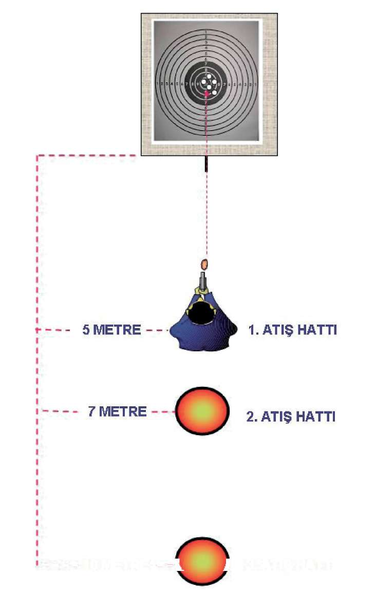
BÖLÜM
İLERİ SEVİYE ATIŞ TEKNİKLERİ
10 METRE - -V J 3. ATIŞ HATTI
Şekil-9) Sivil Kıyafetlerden Yarı Otomatik Tabancayı Çekerek Atış İstasyonu 95
ÖLÜM
ERİ SEVİYE ATIŞ TEKNİKLERİ
2. MP5 MAKİNALI TABANCA İLE İLERİ SEVİYE ATIŞ TEKNİKLERİ
2.1. MP5 MAKİNALI TABANCAYI KURMA VE HIZLI ATIŞ TEKNİKLERİ
2.1.1. Kurma Kolunu Çekerek
MP5 makinalı tabanca, tam otomatik bir silah olduğundan, emniyet mandalı tek tek konumunda bulundurulmalıdır.
Silahı, aktif olarak kullanacağınız elinizle kabzadan kavrayın. Silahın şarjör yuvası pasif olarrak kullandığınız elinize doğru yan yatırarak, şarjör yuvasına takın. Bu durumda iken namluyu daima önü gösterir pozisyonda tutun. Silahı hızlı bir şekilde doldururken silahı aktif olarak kullandığınız elinizle kabzadan kavrayarak silahı bel seviyesinde yere paralel tutun. Diğer pasif elinizle kurma kolundan tutarak çekip bırakmadan aynı elinizle tekrar yerine oturtun. Aynı anda silahın kurma kolunu bırakıp el kundağından sıkı şekilde kavrayın. Silahı iki elinizle önce öne doğru itip silahın dipçik kısmını koltuk altından kurtararak omuz boşluğuna yerleştirin. Yüzünüzü de dipçik kısmına kaynak yaparak hızlı şekilde çift gözünüzle hedefinize nişan alın.
Bunlarla eş zamanlı olarak silahı aktif kullandığınız elinizin yönündeki ayağınızı, topuktan sağ tarafa doğru döndürürken, eş zamanlı olarak diğer ayağınızı yerden sürterek öne doğru çıkarın. Böylece ayaklarınız bir “L” pozisyonuna gelmiş olur. Ayrıca ayaklar hafif kırık, göğüs ve baş hedefe dik pozisyonda olmalıdır. (Bakınız Resim-12.a)
Bu teknikte dikkat edeceğiniz nokta şudur: Atış yaparken iki elinizle kavradığınız silahı omuz boşluğuna doğru çekerek az bir baskı oluşturun. Kol arınız, vücudunuza doğru kırık durumda, başınızı ise silaha doğru eğerek değil, silahı dik duran başınıza doğru kaldırarak ve dipçiği omuz boşluğundaki yerine oturtarak pozisyon alın. Bu teknniğin tamamı bir iki saniyede tamamlanmalıdır.
(Bakınız Resim-12.a)
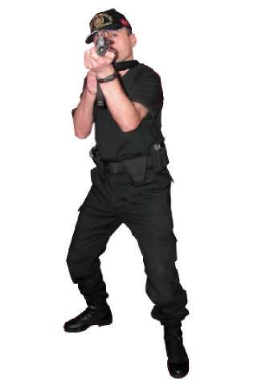
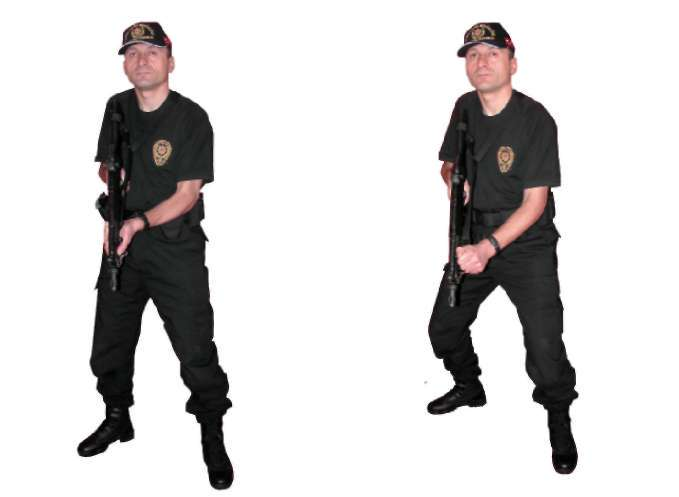
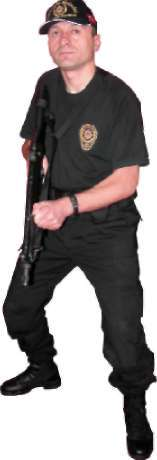
BÖLÜM
İLERİ SEVİYE ATIŞ TEKNİKLERİ
1. Hareket
2. Hareket
Resim-12.a) Kurma Kolunu Çekerek Kurma ve Hızlı Atış Teknikleri 97
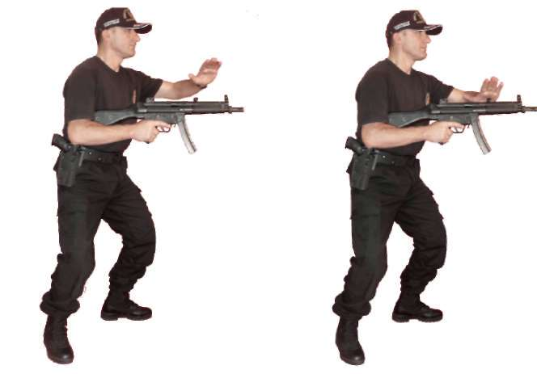
2.1.2. Kurma Koluna Vurarak
MP5 makinalı tabancayı, bel seviyesinde yere paralel, namlu önü gösterir pozisyonda, kurma kolu geriye çekilmiş ve yuvasına oturtulmuş şekilde tutun.
Makinalı tabancanın kurma koluna pasif elinizin iç kısmı ile sert bir şekilde vurarak mekanizmayı yerine oturtun. Eş zamanlı olarak bir önceki kurma tekniğinde olduğu gibi ayak, vücut ve dipçiğin yüzünüze kaynak pozisyonlarını uygulayarak hedefe atış yapın. (Bakınız Resim-12.b) 1. Hareket
2. Hareket
Resim-12.b) Kurma Koluna Vurarak Kurma ve Hızlı Atış Teknikleri 98


BÖLÜM
İLERİ SEVİYE ATIŞ TEKNİKLERİ
Tekniği Uygulamalı Olarak Çalışma Şekli
^ Emniyet tedbirlerini okuyun. Atış poligonuyla ilgili gerekli önlemleri alın.
^ Vücudunuzu basit ısınma teknikleri ile ısındırın ve çalışmaya hazırlayın.
MP5 makinalı tabanca ve şarjörleri kontrol edin. Koruyucu malzemeleri giyin ve giydirin.
^ Bu tekniklerin hepsini, poligonun büyüklüğüne göre yerleştireceğiniz daireli hedef sayısı kadar personelle aynı anda kuru çalışın.
^ MP5 makinalı tabancayı kurma tekniklerini, hedefe doğru ayrı ayrı çalışın.
^ MP5 makinalı tabanca elde hazır olarak 5 metre mesafeden hedefe doğru hızlı atış pozisyonuna geçme ve silahı kurma tekniklerini çalışın.
^ MP5 makinalı tabancanın dipçiğini omuz boşluğuna yerleştirerek kaynağı bozmadan MP5 makinalı tabancayı hedefe kaldırarak çift gözle hızlı nişan alma tekniğini çalışın.
^ MP5 makinalı tabancanın dipçiğini omuz boşluğuna yerleştirerek ve kurma tekniklerini uygulayarak MP5 makinalı tabancayı hedefe kaldırıp çift gözle hızlı nişan alma tekniğini çalışın.
^ Tekniklerin hepsini, vücutta refleks hâline gelinceye kadar tekrar edin.
^ Tamamlanan her çalışmadan sonra tüm personele şarjörleri çıkarttırın.
Silahların fişek yatağını gözle ve elle kontrol ettirip güvenli bir bölgede tetik düşürttürdükten sonra MP5 makinalı tabancanın mekanizmasını tekrar kurulu pozisyona getirtin ve silahları emniyete aldırın. (Bakınız Şekil-10)
Bu teknik,
^ Ani çıkan hedeflere karşı atışa hazır olmayan MP5 makinalı tabancayı 1-2 saniyede atışa hazır hâle getirerek atış yapılmasını, bu ve bunun gibi otomatik silahlarla atış yaparken sağlam bir duruş sağlamak suretiyle geçilecek yeni tekniklere zemin hazırlanmasını ve tekniklerin bir bütün olarak uygulanmasının refleks hâline gelmesini,
^ Silah, sürekli göz önünde kontrol ederek arızanın veya tutukluluğun anında giderilmesini, geçilecek yeni bir pozisyona arızalı bir silahla geçilmemesini bilinç altına yerleştirerek bu davranışın refleks hâline gelmesini sağlar

Şekil-10) MP5 Makinalı Tabancayı Kurarak Atış İstasyonu 2.2. MP5 MAKİNALI TABANCA İLE SABİT POZİSYONDA DEĞİŞİK
YÖNLERDEN ÇIKAN HEDEFLERE DOĞRU DÖNÜŞ ve ATIŞ TEKNİKLERİ
2.2.1. Öndeki Hedeflere Doğru Atış Pozisyonu ve Atış Tekniği Ani bir hareketle, silahı kurma tekniklerini uygulayarak silahınızı doldurun ve eş zamanlı olarak hızlı atış pozisyonuna geçin. Atışınızı bu pozisyonda yaptıktan sonra omuz boşluğundaki silahınızın dipçiğinin kaynağını bozmadan silahın namlusunu yere 70 derecelik bir açı ile aşağıya indirin. Verilen her atış
komutunda silahı hedefe kaldırarak “MP5 Makinalı Tabanca ile Hızlı Atış Te k -
niğindeki” kuralları uygulayarak atışa devam edin. (Bakınız Resim-13.a) UY ARI
Burada dikkat edilmesi gereken nokta silahı hedefinize kaldırdığınız anda (eş zamanllı olarak) nişan hattınız oluşmuyorsa, nişan hattınızı oluşturmada zaman açısından geç kalıyorsanız veya başınızı silaha doğru eğiyorsanız, yapmanız gereken omuz boşluğundakki dipçiği biraz yukarı kaldırmak ve dipçiğin yüzünüze olan kaynağının baskısını artırmakttır. Bunlarla beraber yapılması gereken pozisyonunuzun tamamını gözden geçirmektir.
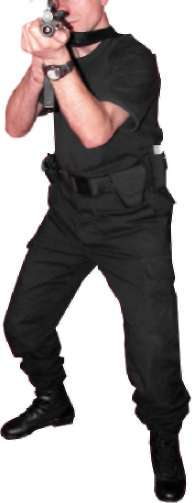
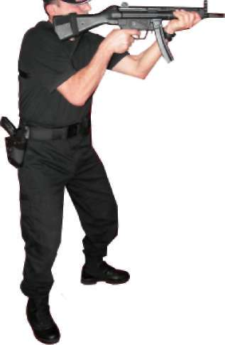
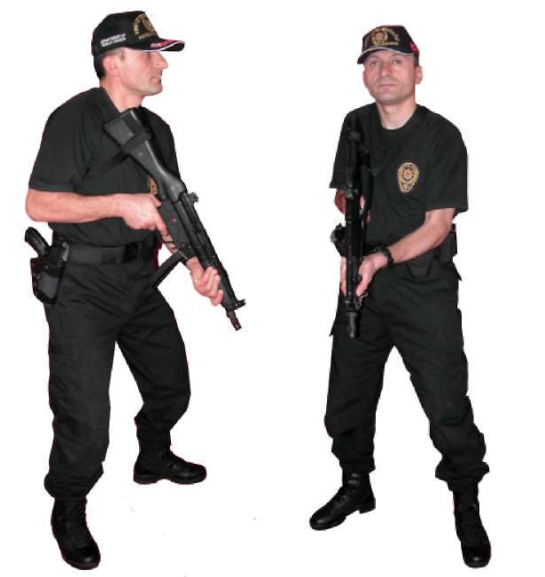
BÖLÜM
İLERİ SEVİYE ATIŞ TEKNİKLERİ
1. Hareket (Y andan Görünüş) 2. Hareket (Önden Görünüş)
0^.
3. Hareket (Y andan Görünüş) 4. Hareket (Önden Görünüş) Resim-13.a) Durarak Öne Doğru Atış Teknikleri 101

2.2.2. Sağdaki Hedeflere Doğru Dönüş ve Atış Tekniği Bulunduğunuz pozisyondan sağ yöndeki hedeflere dönerken, iki elinizle kavramış olduğunuz MP5 makinalı tabancanızın dipçiğinin omuz boşluğundaki kaynağını bozmadan yere 70 derecelik bir açı ile indirin. Eş zamanlı olarak sağ ayağınızın topuğu sabit, sol ayağınızın da parmak ucunda vücudunuzla sağ ayağınızı sağa (hedefe) doğru çevirirken, bozulan sol ayağınızı da sağ
ayağın yanına “L“ oluşturacak biçimde çekin. Hedefe dönüş tamamlandıktan sonra silahınızı hedefe kaldırıp atış yapın. (Bakınız Resim-13.b) Resim-13.b) Durarak MP5 Makinalı Tabanca ile Sağa Dönüş ve Atış Tekniği 102
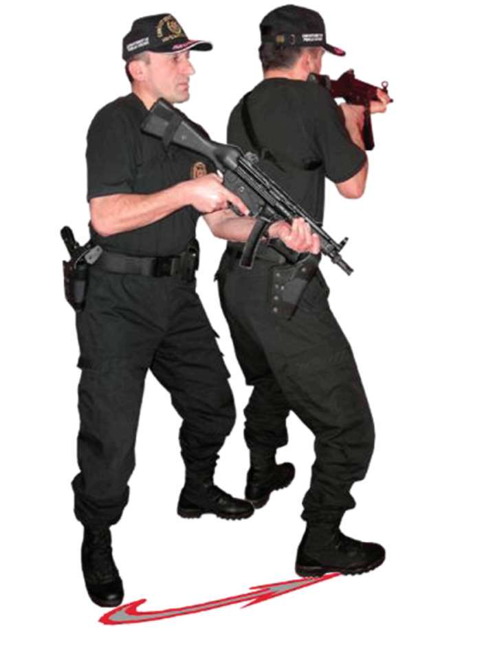
BÖLÜM
İLERİ SEVİYE ATIŞ TEKNİKLERİ
2.2.3. Soldaki Hedeflere Doğru Dönüş ve Atış Tekniği Sağ yöne dönme tekniğinin tersi uygulanır. Bulunduğunuz pozisyondan sol yöndeki hedeflere dönerken, iki elinizle kavramış olduğunuz MP5 makinalı tabancanızın dipçiğinin omuz boşluğundaki kaynağını bozmadan yere 70 derecelik bir açı ile indirin. Eş zamanlı olarak sol ayağınızın topuğu sabit sağ
ayağınızın da parmak ucunda vücudunuzla sol ayağınızı sola (hedefe) doğru çevirirken, bozulan sağ ayağınızı da sol ayağın yanına “L” oluşturacak biçimde çekin. Hedefe dönüş tamamlandıktan sonra silahınızı hedefe kaldırıp atış yapın. (Bakınız Resim-13.c) Resim-13.c) Durarak MP5 Makinalı Tabanca ile Sola Dönüş ve Atış Tekniği 103
2.2.4. Gerideki Hedeflere Doğru Dönüş ve Atış Tekniği Bulunduğunuz atış pozisyonundan geri istikametteki hedeflere dönerken çift elle kavramış olduğunuz MP5 makinalı tabancanızın dipçiğinin omuz boşluğundaki kaynağını bozmadan yere 70 derecelik bir açı ile indirin. Eş zamanlı olarak dönüş yapacağınız yöndeki ayağınızın topuğu sabit olarak ters ayağınızın parmak ucunda, dönüş yönünüzdeki ayağınızı 180 derece hedefe çevirerek, bozulan ters ayağınızı “L” oluşturacak şekilde yanına çekin. Dönüş tamamlandıktan sonra silahınızı hedefe kaldırıp atış edin. (Bakınız Resim-13.d) Resim-13.d) Durarak MP5 Makinalı Tabanca ile Geriye Doğru Dönüş ve Atış Tekniği 104


BÖLÜM
İLERİ SEVİYE ATIŞ TEKNİKLERİ
Tekniği Uygulamalı Olarak Çalışma Şekli
^ Emniyet tedbirlerini okuyun. Atış poligonuyla ilgili gerekli önlemleri alın.
^ Vücudunuzu basit ısınma teknikleri ile ısındırın ve çalışmaya hazırlayın.
MP5 makinalı tabancayı ve şarjörleri kontrol edip koruyucu malzemeleri giyin ve giydirin.
^ Tekniklerin hepsini atışlı çalışmadan önce yetirince kuru çalışın.
^ Bu teknikleri poligonun büyüklüğüne göre yerleştireceğiniz daireli hedef sayısı kadar personelle aynı anda çalışabilirsiniz.
^ Daireli hedeflerin 5 metre mesafede karşısına geçerek, şarjöre 10 adet mermi doldurun. MP5 makinalı tabancaya şarjörü takıp silahın emniyetini tek tek atış konumuna getirin ve atış komutu bekleyin.
^ Silahı tek elinizle hedefe paralel tutarken atış komutuyla ilk atışınızı, silahınızı kurup hızlı atış pozisyonuna geçerek, yaklaşık 3 saniyede çift gözle nişan alarak yapın. Silahın omuz boşluğundaki yerini bozmadan aşağıya indirip kalan 9 adet fişeğinizi verilen her atış komutunda hedefe kaldırarak yaklaşık 2, 3 saniye içinde tek tek atış yapın.
^ Aynı mesafeden silahın şarjörünü tam kapasite doldurup silaha takın.
Atışa, silahınızı kurarak başlayın. Ayrıca atışlarınızı ikili veya üçlü darbeli olarak yapın. Ancak atış hızını ilk turlarda yavaş daha sonraki turlarda hızlandırarak yapmalısınız. Atışların hedefin siyah bölgesinde toplanması bir sonraki mesafeye geçmeyi sağlar.
^ İlk 5 metre mesafedeki atışlar istenilen seviyede ise çalışmanıza, 7
metre mesafede aynı tekniği uygulayarak devam edin. Atışlarınızın hedefin siyah noktasına toplanmasına dikkat edip bir sonraki çalışmanıza 10 metre mesafeden devam edin. Bu mesafeden de atışların hedefin siyah bölgesinde toplanması atıcının başarılı olduğunu gösterir.
^ Bu ve bundan sonraki çalışacağınız teknikleri, teker teker çalışın.
^ Şarjörü tam kapasite doldurup silaha takın ve 90 derece sağa döndü
ğünüzde hedefiniz karşınızda olacak şekilde duruş yönünüzü ayarlayın.
^ İlk atışınızı, silahı kurup sağ yöndeki hedefe dönerek yapın.
^ Silahın tipçiğini omuz boşluğundaki kaynağını bozmadan aşağıya doğru indirip tekrar başlangıçtaki pozisyonunuza dönün. Bundan sonraki komutlarda aynı atışı, dönüp silahı hedefe kaldırarak yapın.
^ Aynı atış tekniğini duruş yönünüzü ayarlayarak soldaki hedefle, yine hedefinize sırtınızı dönerek gerideki hedeflere atış yapın. Bu atış tekniklerinde de atışlarınızın hedefin siyah bölgesinde toplanmasına dikkat edin.
^ Mühimmatın durumuna göre teknikleri tekrar edin.
^ Tamamlanan her çalışmadan sonra atış yapan tüm personele şarjörleri çıkarttırın. Silahların fişek yatağını gözle ve elle kontrol ettirip güvenli bir bölgede tetik düşürttürdükten sonra MP5 makinalı tabancanın mekanizmasını tekrar kurulu pozisyona getirtin ve silahları emniyete aldırın.
(Bakınız Şekil-11.a, 11.b, 11.c, 11.d)
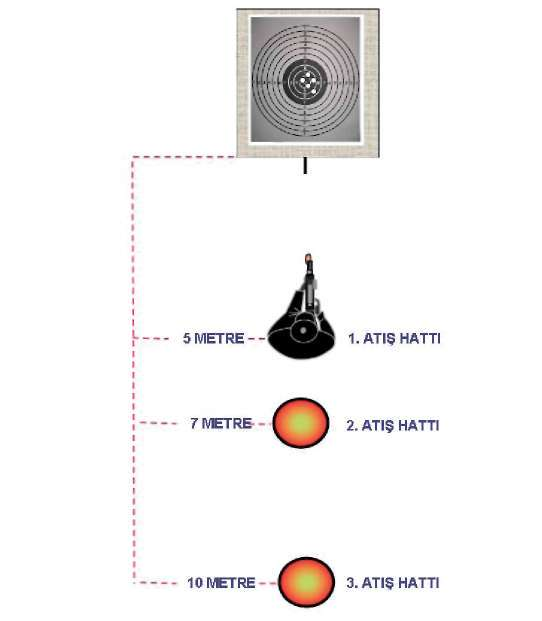

^ Özellikle MP5 makinalı tabanca ile öne doğru atış tekniği, hızlı atış
tekniklerinin temelini oluşturur Bu teknikle hızlı hedef algılamayı, hedefe konsantre olmayı, hedefin karşısındaki duruş pozisyonunu ayarlamayı, hedefe çift gözle hızlı nişan oluşturmayı ve atış esnasında bilek ile kolları kilitleme pozisyonlarını öğrenir Ayrıca değişik yönlerden çıkabilecek hedeflere karşı, vücuda ani dönüş refleksleri ve bu yönlere atış yapabilme kabiliyeti kazandırır Şekil-11.a) Dururken Öne Doğru Atış İstasyonu Şekil-11.b) Dururken Sağa Doğru Atış İstasyonu 106
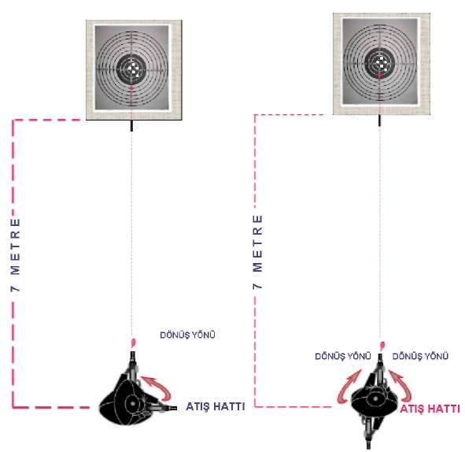
BÖLÜM
İLERİ SEVİYE ATIŞ TEKNİKLERİ
Şekil-11.c) Dururken Sola Doğru
Şekil-11.d) Dururken Geriye
Atış İstasyonu
Doğru Atış İstasyonu
2.3. MP5 MAKİNALI TABANCADA ŞARJÖR DEĞİŞTİRME
VE ÇÖKEREK-AYAKTA ATIŞ TEKNİKLERİ
MP5 makinalı tabancada şarjör değiştirilirken önce aktif olarak kullandığınız elinizle silahı göz ve hedef arasına getirerek namlu yukarıyı gösterecek şekilde dik pozisyona getirin. Diğer elinizle şarjör çıkarma mandalına basarak şarjörü çıkartıp yedek şarjörünüzü şarjör yuvasına çıt sesi gelinceye kadar itin. Hızlı bir şekilde aynı elinizle silahı kurarak aktif duruma getirin. Şarjör de
ğiştirirken dikkatiniz sürekli hedefte olmalıdır. (Bakınız Resim-12.a) Bu tekniği sütre gerisinde ayakta veya oturarak (Bakınız Resim-12.b) uygulayabilirsiniz.
Sütrenin olmadığı yerlerde, hızlı şekilde hedef küçültün ve bir iki adım sağa ve sola sıçrayın. Silahı aktif olarak kullandığınız elinizin yönündeki ayağınızın topuğuna oturarak, diğer ayağınızı da öne kırık pozisyona getirin. Bunun yanında üzerine oturacağınız ayağınızı tam kırarak uzun mesafeli atışlarda öndeki kırık ayağın üstünden kol dirseğinizi destek yaparak daha rahat bir atış
pozisyonu sağlayabilirsiniz. (Bakınız Resim-14.a) Ayrıca çökme tekniği şarjör değiştirme tekniğiyle eş zamanlı yapılmalı ve teknikler uygulanırken vücut ve baş hedefe dik tutulmalıdır. (Bakınız Resim-14.a, 14.b.1, 14.b.2, 14.c.1, 14.c.2)
Şarjör değiştirirken dikkatiniz sürekli hedefte olmalıdır.
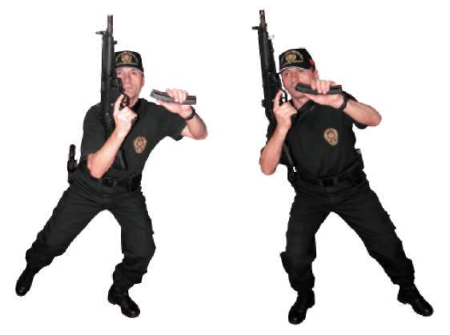
Hareket 1.a) Sola Sıçrayarak Hareket 1.b) Sağa Sıçrayarak 2. Hareket 3. Hareket 4. Hareket
Resim-14.a) Şarjör Değiştirme ve Çökerek Atış Teknikleri 108
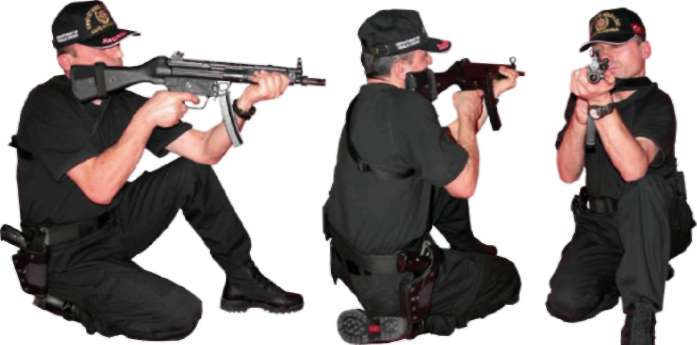
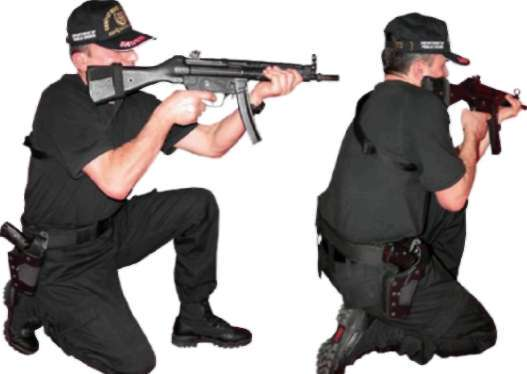
BÖLÜM
İLERİ SEVİYE ATIŞ TEKNİKLERİ
4.1.a.) Kısa Mesafe
4.1.b.) Kısa Mesafe
4.1.c.) Kısa Mesafe
Y andan Görünüş
Arkadan Görünüş
4.2.a.) Uzun Mesafe
4.2.b.) Uzun Mesafe
4.2.c.) Uzun Mesafe
Y andan Görünüş
Arkadan Görünüş
Çökerek Kısa ve Uzun Mesafeli Atış Teknikleri (Resim-14.a 4. Hareket’in Açılımı) 109

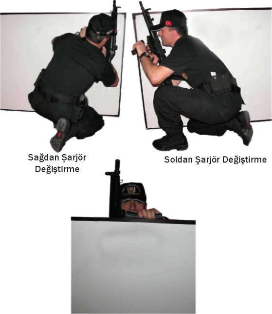

Resim-14.b.1) Sütre Gerisinde Çökerek Şarjör Değiştirme Teknikleri Sağdan Şarjör Değiştirme Soldan Şarjör Değiştirme Resim-14.b.2) Sütre Gerisinde Ayakta Şarjör Değiştirme Teknikleri 110
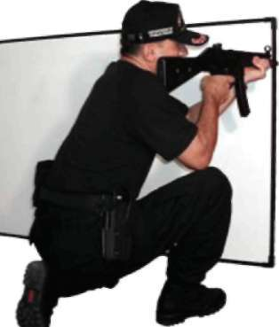
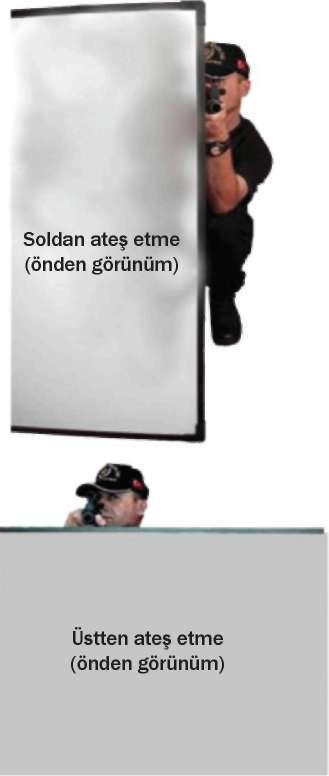
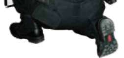
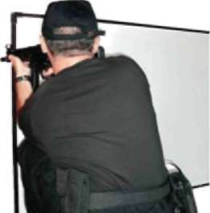
BÖLÜM
İLERİ SEVİYE ATIŞ TEKNİKLERİ
(arkadan görünüm)
(arkadan görünüm)
(arkadan görünüm)
Resim-14.c.1) Sütre Gerisinde Çökerek Atış Teknikleri 111
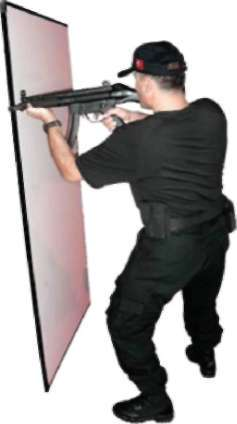

Soldan ateş etme
^
(önden görünüm)
Resim-14.c.2) Sütre Gerisinde Ayakta Atış Teknikleri Tekniği Uygulamalı Olarak Çalışma Şekli
^ Emniyet tedbirlerini okuyun. Atış poligonuyla ilgili gerekli önlemleri alın.
^ Vücudunuzu basit ısınma teknikleri ile ısındırın ve çalışmaya hazırlayın.
MP5 makinalı tabancayı ve şarjörleri kontrol edip koruyucu malzemeleri giyin ve giydirin.
^ Tekniklerin hepsini, atışlı çalışmadan önce yetirince kuru çalışın.
^ Bu teknikleri poligonun büyüklüğüne göre yerleştireceğiniz daireli hedef sayısı kadar personelle aynı anda çalışabilirsiniz.
^ Tekniklerin hepsini, daireli hedefe 7 metre mesafeden atışlı çalışmadan önce yeterince kuru çalışın.
^ Her iki şarjöre de ikişer fişek doldurun ve ilk şarjörü silahınıza takın.
Diğer yedek şarjörünüzü rahat alabileceğiniz uygun bir yere koyun. Silahın emniyet mandalını tek tek atış konumuna getirin. Silahın namlusu 112


BÖLÜM
İLERİ SEVİYE ATIŞ TEKNİKLERİ
hedefi gösterecek şekilde yere paralel tek elinizle silahı tutup 7 metre mesafedeki hedefinizin karşısına geçip atış komutunu bekleyin.
^ Verilen atış komutuyla silahınızı kurarak hedefinize silahınızdaki fişek sayısına odaklanmadan üç kere arka arkaya tetiğinizi çekerek darbeli atış yapın. Silahınızdaki fişek bittiğinde tetik çekerseniz silahta patlama olmayacak ve tetiği boşa düşürmüş olacaksınız. Bu durum size şarjör değiştirmeniz gerektiğini gösterir.
^ Bu pozisyonu algılayıp bilinç altına yerleştirmeniz gerekir. Zamanla bu durum refleks hâlini almalıdır.
^ Silahta fişeğin bittiğini anladığınızda en hızlı şekilde çökerek şarjör de
ğiştirmelisiniz. Silahınızı kurarak bulunduğunuz çökme pozisyonundayken kalan iki fişeğinizi atın.
^ Aynı tekniği, mesafeyi 15 metreye çıkartarak rahat çökme pozisyonunda ve yine 7 metre mesafeden herhangi bir sütrenin gerisinden ayakta şarjör değiştirerek çalışın.
^ Bu tekniğin tamamının ortalama 6-7 saniyede tamamlanması, atışların hedefin siyah bölgesinde toplanması başarılı olduğunuzu gösterir.
^ Mühimmatın durumuna göre teknikleri tekrar edin.
^ Tamamlanan her çalışmadan sonra şarjörü çıkartın. MP5 makinalı tabancanın fişek yatağını gözle kontrol edin. Güvenli bir bölgede tetik dü
şürerek mekanizmayı tekrar kurulu pozisyona getirin ve silahı emniyete alın. (Bakınız Şekil-12)
Bu tekniklerle,
^ MP5 makinalı tabancada fişeğin bitmesi durumunda şarjörün 4, 5
saniyede değiştirilmesi,
^ Silahın tutukluk yapması durumda hızlı şekilde şarjör çıkartılarak tutukluluğun giderilmesi,
^ Hedef küçülterek çökme pozisyonunda şarjör değiştirilmesi,
^ Sütrelerden faydalanarak ayakta şarjör değiştirilmesinin bilinçaltına yerleştirilerek refleks hâline getirilmesi amaçlanmaktadır 113

Şekil-12) Şarjör Değiştirme ve Çökerek Atış İstasyonu 2.4. MP5 MAKİNALI TABANCA İLE YÜRÜRKEN DURUP DEĞİŞİK
YÖNLERDEN ÇIKAN HEDEFLERE DOĞRU ATIŞ TEKNİKLERİ
2.4.1. Yürürken Önden Çıkan Hedeflere Doğru Durarak Atış Tekniği Ani bir duruşla eş zamanlı olarak, MP5 makinalı tabancanız boşsa kurarak, doluysa direk hızlı atış tekniğine geçerek hedefinize atış yapın. Silahınızın dipçiğini omuz boşluğundaki kaynağını bozmadan 70 derecelik bir açıyla yere doğru indirip yürümeye devam edin. Bundan sonra verilecek atış komutlarında dolu olan silahınızı yukarı kaldırıp atış yapın ve aynı pozisyona geçin. Her komutta aynı tekniği tekrarlayın. (Bakınız Resim-15.a) 114

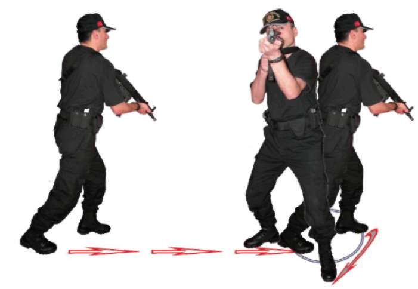
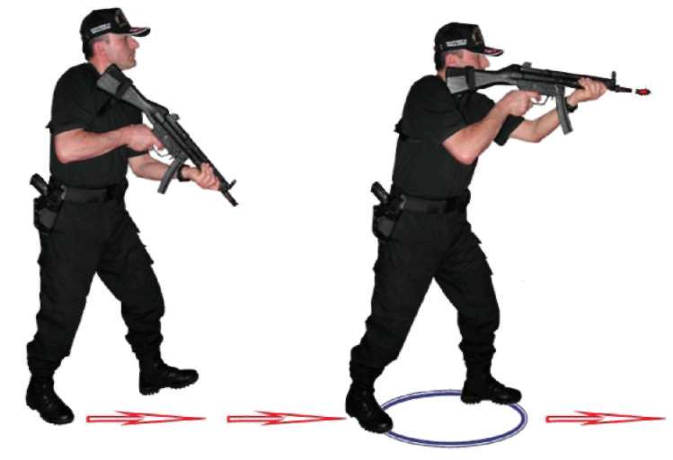
BÖLÜM
İLERİ SEVİYE ATIŞ TEKNİKLERİ
Resim-15.a) Yürürken Önden Çıkan Hedeflere Doğru Durarak Atış Tekniği 2.4.2. Yürürken Sağdan Çıkan Hedeflere Doğru Durarak Atış Tekniği Ani bir duruşla eş zamanlı olarak, MP5 makinalı tabancanız boşsa kurarak, doluysa direk sağa dönüş tekniğini uygulayarak hedefinize atış yapın. Silahınızın dipçiğini omuz boşluğundaki kaynağını bozmadan 70 derecelik bir açıyla yere doğru indirip yürümeye devam edin. Bundan sonra verilecek atış komutlarında dönüş yaparak dolu olan silahınızı yukarı kaldırıp atış yapın ve aynı pozisyona geçin. Her komutta aynı tekniği tekrarlayın. (Bakınız Resim-15.b) Resim-15.b) Yürürken Sağdan Çıkan Hedeflere Doğru Durarak Atış Tekniği 115
2.4.3. Yürürken Soldan Çıkan Hedeflere Doğru Durarak Atış Tekniği Ani bir duruşla eş zamanlı olarak, MP5 makinalı tabancanız boşsa kurarak, doluysa direk sola dönüş tekniğini uygulayarak hedefinize atış yapın. Silahınızın dipçiğini omuz boşluğundaki kaynağını bozmadan 70 derecelik bir açıyla yere doğru indirip yürümeye devam edin. Bundan sonra verilecek atış komutlarında dönüş yaparak dolu olan silahınızı yukarı kaldırıp atış yapın ve aynı pozisyona geçin. Her komutta aynı tekniği tekrarlayın. (Bakınız Resim-15.c) Resim-15.c) Yürürken Soldan Çıkan Hedeflere Doğru Durarak Atış Tekniği 2.4.4. Yürürken Geriden Çıkan Hedeflere Doğru Durarak Atış Tekniği Ani bir duruşla eş zamanlı olarak, MP5 makinalı tabancanız boşsa kurarak, doluysa direk geriye dönüş tekniğini uygulayarak hedefinize atış yapın. Silahınızın dipçiğini omuz boşluğundaki kaynağını bozmadan 70 derecelik bir açıyla yere doğru indirip yürümeye devam edin. Bundan sonra verilecek atış komutlarında dönüş yaparak dolu olan silahınızı yukarı kaldırıp atış yapın ve aynı pozisyona geçin. Her komutta aynı tekniği tekrarlayın. (Bakınız Resim-15.d) 116
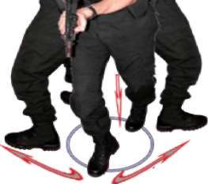
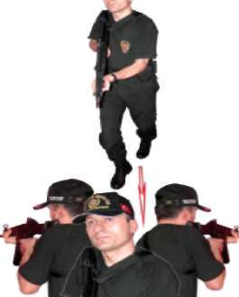
BÖLÜM
İLERİ SEVİYE ATIŞ TEKNİKLERİ
Sağdan
Soldan
Dönüş
Dönüş
Resim-15.d) Yürürken Geriden Çıkan Hedeflere Doğru Dura-rak Atış Tekniği Tekniği Uygulamalı Olarak Çalışma Şekli
^ Emniyet tedbirlerini okuyun. Atış poligonuyla ilgili gerekli önlemleri alın.
^ Vücudunuzu basit ısınma teknikleri ile ısındırın ve çalışmaya hazırlayın.
MP5 makinalı tabancayı ve şarjörleri kontrol edip koruyucu malzemeleri giyin ve giydirin.
^ Tekniklerin hepsini, atışlı çalışmadan önce yetirince kuru çalışın.
^ Boy hedeflerinizi poligonun büyüklüğüne göre yakından uzağa doğru, aralarında yürünecek şekilde 5-7 metre mesafelerde çapraz ve düz olacak biçimde yarleştirin.
^ Bu tekniklerin hepsini, mevcut olan istasyonda atışlı çalışırken teker teker çalışın.
^ Tek şarjörünüzü tam kapasite doldurup silahınıza takın. Silahınızı normal doldurup istasyondaki ilk hedefin karşısında atış pozisyonuna ge
çerek komut bekleyin
^ Verilen yürü komutuyla beraber hedeflere yakından uzağa doğru yürüyün. Verilen ilk atış komutuyla beraber durup silahınızı kaldırarak size yakın olan hedefe doğru ikili veya üçlü darbeli atış yapın. Silahınızın dipçiğinin omuz boşluğundaki kaynağına bozmadan silahınızı aşağıya 117
doğru indirip yürümenize devam edin. Verilen her atış komutunda atış
tekniğini tekrarlayarak son hedefe atış yapıncaya kadar devam edin.
^ Aynı tekniği boy hedeflerini yürüme yolunuza paralel 5-7 metre mesafe oluşturacak şekilde yerleştirin. Tek şarjörünüzü tam kapasite doldurup silahınıza takın yürüme yolunuzun başlangıç noktasında atış pozisyonu alarak komut bekleyin.
^ Verilen yürüme komutuyla hedefleri sağ tarafınıza alarak yürümeye başlayın. Verilen ilk atış komutunda size yakın olan ilk hedefe dönüp durarak atış yapın. Hemen sonra silahın dipçiğinin omuz boşluğundaki kaynağını bozmadan silahı aşağıya indirip yürüme istikametinize dönerek yürümenize devam edin. Verilen her atış komutunda aynı atış tekniğini son hedefe atış yapana kadar tekrarlayın.
^ Ayrıca yürüme yönünüzü değiştirip hedeflerinizi yürüme yönünüzün soluna alın. Aynı atış tekniğini sol yöndeki hedeflerinize yapın
^ Tek şarjörünüzü tam kapasite doldurup silahınıza takın ve normal dolduruş yaparak bir metre mesafeden sırtınızı boy hedefine dönüp atış
pozisyonunuzu alarak verilecek komutu bekleyin.
^ Verilen yürü komutuyla hedefe sırtınız dönük şekilde, hedeften uzaklaşarak yürürken verilen ilk atış komutunda durun. Sağdan ve soldan hedefe dönüp silahınızı kaldırarak atış yapın ve tekrar hedefe sırtınızı dönün yürümenize devam edin. 10-15 metre mesafeye kadar verilen atış komutlarıyla beraber atış tekniğini uygulayın.
^ Atışlarınızın boy hedefinin göğüs bölgesinde toplanması başarılı oldu
ğunuzu gösterir.
^ Mühimmatın durumuna göre teknikleri tekrar edin.
^ Tamamlanan her çalışmadan sonra atış yapan tüm personele şarjörleri çıkarttırın. Silahların fişek yatağını gözle ve elle kontrol ettirip güvenli bir bölgede tetik düşürttürdükten sonra MP5 makinalı tabancanın mekanizmasını tekrar kurulu pozisyona getirtin ve silahları emniyete aldırın.
(Bakınız Şekil-13.a, 13.b, 13.c, 13.d)
Bu teknik,
^ MP5 makinalı tabanca ile yürürken önden ve değişik yönlerden çıkan hedeflere aniden durarak dönüp atış yapabilme kabiliyetinin ka-zanılmasını ve refleks hâline getirilmesini sağlar 118

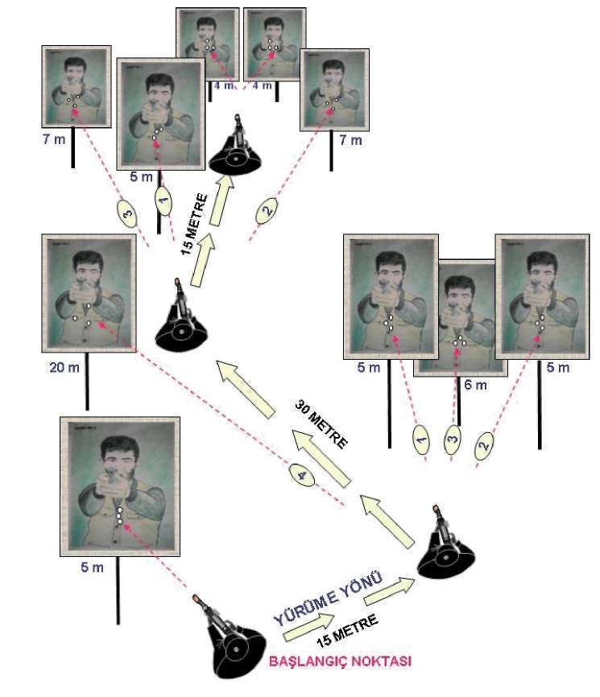
BÖLÜM
İLERİ SEVİYE ATIŞ TEKNİKLERİ
Şekil-13.a) Yürürken Önden Çıkan Hedeflere Doğru Durarak Atış İstasyonu 119
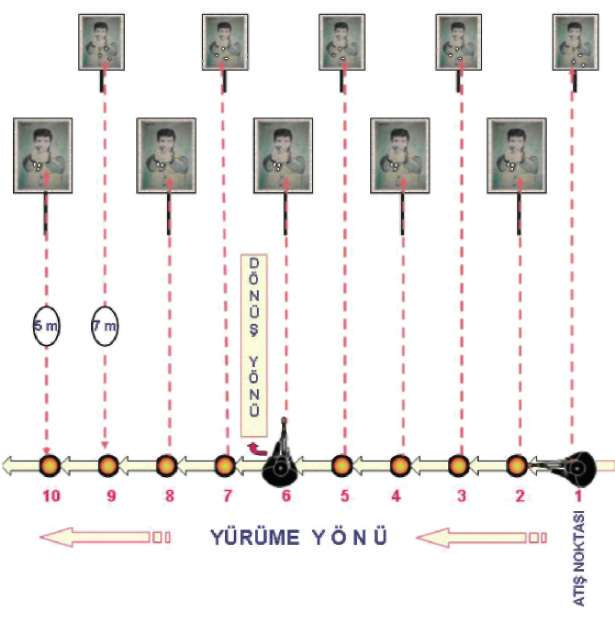
Şekil-.13.b) Yürürken Sağdan Çıkan Hedeflere Doğru Durarak Atış İstasyonu Şekil-13.c) MP5 Makinalı Tabanca ile Yürürken Durup Sol Yöne Atış İstasyonu 120

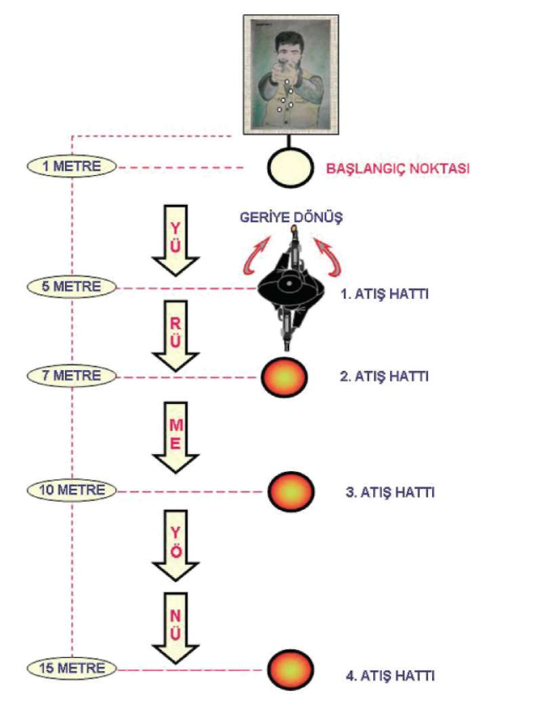
BÖLÜM
İLERİ SEVİYE ATIŞ TEKNİKLERİ
Şekil-13.d) MP5 Makinalı Tabanca ile Yürürken Durup Sol Yöne Atış İstasyonu 121
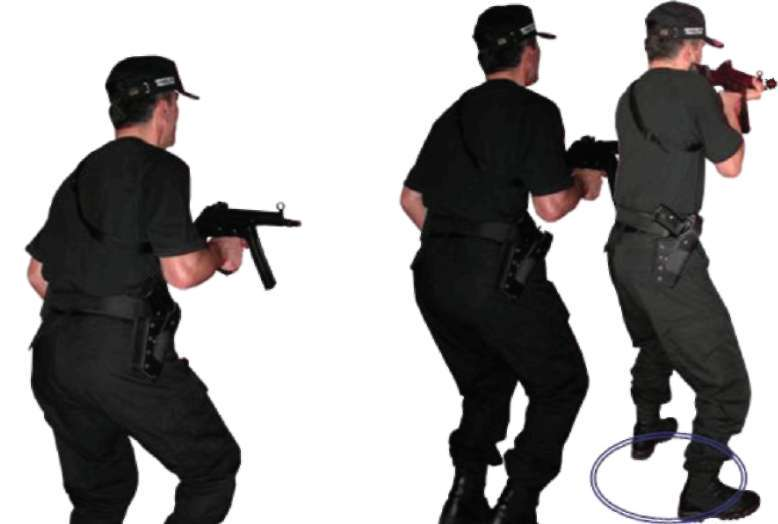
2.5. MP5 MAKİNALI TABANCA İLE KOŞARKEN DURUP DEĞİŞİK
YÖNLERDEN ÇIKAN HEDEFLERE DOĞRU ATIŞ TEKNİKLERİ
2.5.1. Koşarken Önden Çıkan Hedeflere Doğru Durarak Atış Tekniği MP5 Makinalı tabanca ile koşarken, tek elinizle silahı kabzadan kavrayıp yere paralel, namlu ön tarafı gösterecek şekilde, hareket alanı kolun doğal ileri geri hareketinin içinde olmalıdır. Bu pozisyonda koşarken ön taraftan çıkan ani bir hedefe karşı duruşunuzu önce step yaparak tamamlayın. Eş zamanlı olarak silahınız boşsa doldurun, dolu ise direkt hızlı atış pozisyonuna geçerek hedeflerinize atış yapın. Tekrar koşmanıza devam edin. (Bakınız Resim-16.a) Atış
Step
Pozisyonu
Pozisyonu
Koşu
Pozisyonu
Resim-16.a) Koşarken Önden Çıkan Hedeflere Doğru Durarak Atış Tekniği 2.5.2. Koşarken Sağdan Çıkan Hedeflere Doğru Durarak Atış
Tekniği
Önce duruşunuzu step yaparak tamamlayın. Eş zamanlı olarak silahınız boşsa doldurun, dolu ise direkt sağa dönüş tekniğini uygulayarak hedeflerinize atış yapın ve koşmaya devam edin. (Bakınız Resim-16.b) 122
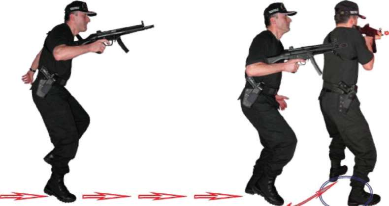


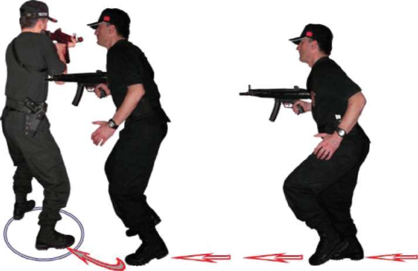
BÖLÜM
İLERİ SEVİYE ATIŞ TEKNİKLERİ
Atış Step
Koşu
Pozisyonu Pozisyonu
Pozisyonu
Resim-16.b) Koşarken Sağdan Çıkan Hedeflere Doğru Durarak Atış
2.5.3. Koşarken Soldan Çıkan Hedeflere Doğru Durarak Atış Tekniği Önce duruşunuzu step yaparak tamamlayın. Eş zamanlı olarak silahınız boşsa doldurun, dolu ise direkt sola dönüş tekniğini uygulayarak hedeflerinize atış yapın ve koşmaya devam edin. (Bakınız Resim-16.c) Koşu
Step
Pozisyonu
Pozisyonu
Atış Pozisyonu
Resim-16.c) Koşarken Soldan Çıkan Hedeflere Doğru Durarak Atış Tekniği 123
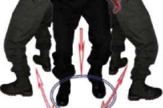
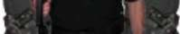
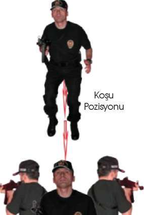

2.5.4. Koşarken Geriden Çıkan Hedeflere Doğru Durarak Atış Tekniği Önce duruşunuzu step yaparak tamamlayın. Eş zamanlı olarak silahınız boşsa doldurun, dolu ise direkt geriye dönüş tekniğini uygulayarak heddefleri-nize atış yapın ve koşmaya devam edin. (Bakınız Resim-16.d) Atış
Atış
Pozisyonu
Pozisyonu
Step ve Sağa Sola
Dönüş Pozisyonu
Resim-16.d) Koşarken Geriden Çıkan Hedeflere Doğru Durarak Atış Tekniği Tekniği Uygulamalı Olarak Çalışma Şekli
^ Emniyet tedbirlerini okuyun. Atış poligonuyla ilgili gerekli önlemleri alın.
^ Vücudunuzu basit ısınma teknikleri ile ısındırın. Çalışmaya hazırlayın.
MP5 makinalı tabancayı ve şarjörleri kontrol edip koruyucu malzemeleri giyin ve giydirin.
^ Tekniklerin hepsini, atışlı çalışmadan önce yetirince kuru çalışın.
^ Bu tekniklerin hepsini, mevcut olan istasyonda atışlı çalışırken teker teker çalışın.
^ Poligonunuza normal bir boy hedefi yerleştirin.
^ Tek şarjörünüzü tam kapasite doldurup elinizdeki silaha takarak normal dolduruş yapın. Silahınızın emniyet mandalını tek tek atış konu-124

BÖLÜM
İLERİ SEVİYE ATIŞ TEKNİKLERİ
muna getirin. Hedefinizin karşısında yaklaşık 30 metre mesafede koş
komutunu bekleyin.
^ Verilen koş komutuyla silah tek elinizde, namlu hedefi gösterecek bi
çimde yere paralel durumdayken koşun ve yaklaşık 20-15-10-5 metre mesafelerden verilecek atış komutuyla beraber step yaparak durup hedefe atış yaptıktan sonra tekrar hedefe doğru koşmaya devam edin. Bu tekniği hedefe 5 metre kalana kadar devam ettirin.
^ Aynı tekniği hedefinize 2 metre mesafeden sırtınızı dönüp koşarken yaklaşık 5-10-15-20 metre mesafelerden verilen atış komutuyla beraber step yapıp durarak hedefe sağdan veya soldan dönüp atış yapın.
Sonra geriye dönüp koşmanıza devam edin. Bu tekniği yaklaşık 20 metre mesafeye kadar devam ettirin.
^ Boy hedeflerinizi koşu yolunuza paralel 5-7 metre mesafe oluşturacak şekilde yerleştirin. Hedefleri sağ paralelinize alarak tek şarjörünüzü tam kapasite doldurup elinizdeki silaha takın ve normal doldurup emniyet mandalını tek tek atış konumuna getirin ve İlk hedefin paralelinde koş
komutunu bekleyin.
^ Verilen koş komutuyla hedeflerinize paralel koşarken verilen her atış
komutuyla beraber step yapıp durun ve hedefinize dönüp atış yapın tekrar son hedefe atış yapana kadar koşunuza devam edin.
^ Aynı tekniği hedeflere paralel ters yönden koşarak sol yöndeki hedeflere doğru atış yapın.
^ Atışlarınızın boy hedefinin göğüs bölgesinde toplaması başarılı olduğunuzu gösterir.
^ Mühimmatın durumuna göre teknikleri tekrar edin.
^ Tamamlanan her çalışmadan sonra şarjörü çıkartıp MP5 makinalı tabancanın fişek yatağını gözle kontrol edin. Güvenli bir bölgede tetik dü
şürerek mekanizmayı tekrar kurulu pozisyona getirin ve silahı emniyete alın. (Bakınız Şekil-14.a, 14.b, 14.c, 14.d)
Bu teknik,
MP5 makinalı tabanca ile koşu hâlindeyken çıkan ani hedeflere, durup atış yapılmasını,
er Operasyon esnasında yer değiştirirken seri hareket edilmesini, Pasif kalınan alanlardan hızlı şekilde çıkılmasını ve efor harcarken kalp atışlarının yüksek olduğu durumlarda etkin silah kullanılmasını, Birbirini takip eden seri operasyonlarda gerekli olan kondisyonun kazandırılmasını,
Personelin gerçek operasyonlarda karşılaşabileceği daha stresli ve heyecanlı ortamlara hazırlanmasını sağlar.
Şekil-14.a) Koşarken Önden Çıkan Hedeflere Doğru Durarak Atış İstasyonu 126


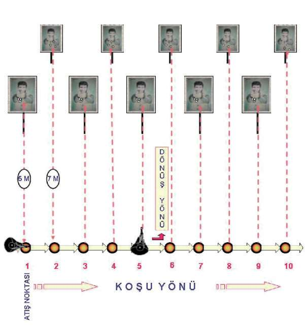
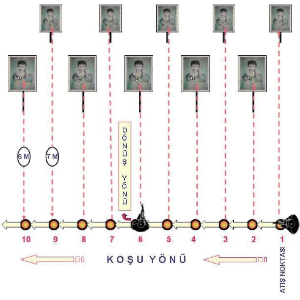
BÖLÜM
İLERİ SEVİYE ATIŞ TEKNİKLERİ
Şekil-14.b) Koşarken Sağdan Çıkan Hedeflere Doğru Durarak Atış İstasyonu Şekil-14.c) Koşarken Soldan Çıkan Hedeflere Doğru Durarak Atış İstasyonu 127

Şekil-14.d) Koşarken Geriden Çıkan Hedeflere Doğru Durarak Atış İstasyonu 2.6. MP5 MAKİNALI TABANCA İLE HAREKET HÂLİNDEYKEN DEĞİŞİK
YÖN VE AÇILARDAN ÇIKAN HEDEFLERE DOĞRU ATIŞ TEKNİKLERİ
Açıklama
Bu tekniğe “MP5 Makinalı Tabanca ile Hareket hâlinde Atış Tekniği” de denilebilir. Tekniğe önce yürüme tekniklerini öğrenerek başlayın.
2.6.1. İleri Doğru Yürüme Tekniği
Yürürken atış yapıldığında MP5 makinalı tabancada sallanma olacaktır. Bu sallanmayı en aza indirebilmek için yürüme ayak topuğundan, ayak ucuna 128
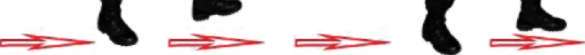
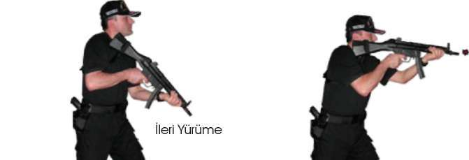
BÖLÜM
İLERİ SEVİYE ATIŞ TEKNİKLERİ
doğru yapılmalıdır. Bacaklar hafif kırık, göğüs ve baş az öne alınmış olmalıdır.
Bu durum ringdeki boksörün duruşuna benzer. (Bakınız Resim-17.a) 2.6.2. İleri Yürürken Öndeki Hedeflere Doğru Hareket Hâlinde Atış Tekniği Önce silahın tipçiğini omuz boşluğunuza yerleştirin. Yere 70 derecelik bir açıyla ileriye doğru yürüme pozisyonuna geçin. Kollar silaha doğru kırık durmalı, verilen her atış komutunda silah hedefe kaldırılarak dipçiğin omuz boşluğundaki kaynağı bozulmadan yüz kaynağını da tamamladıktan sonra atış
yapılmalıdır. (Bakınız Resim-17.a)
Burada dikkat edilmesi gereken, yürüme esnasında atış yapılırken kesinlikle duraklama yapılmaz, gözler sürekli hedefi gözlemeli, ayrıca yürüme hızı hedeflere isabet ettireceğiniz bir hızda olmalıdır.
Atış hızınız yakın mesafelerde hızlı, uzak mesafelere doğru gittiğinizde daha yavaş olmalıdır.
İleri Yürürken
Atış Pozisyonu
Resim-17.a) İleri Yürürken Öndeki Hedeflere Doğru Hareket Hâlinde Atış Tekniği 2.6.3. Geriye Doğru Yürüme Tekniği
Bu teknik ileri doğru yürüme tekniğinin tam tersidir. Geriye doğru yürüme ayakuçlarından ayak topuğuna doğru olmalıdır. Diğer vücut pozisyonu aynıdır.
2.6.4. Geriye Doğru Yürürken Öndeki Hedeflere Doğru Atış Tekniği İleriye doğru yürüme tamamlandıktan sonra verilen geriye doğru yürüme komutuyla atış pozisyonu bozulmadan geriye doğru yürüme tekniğine geçilir. Bu durumdayken yürüme ve atış hızı ayarlanarak aynı atış tekniği ile hedeflere doğru atış yapılır. (Bakınız Resim-17.b) 129
Geri Yürürken
Atış Pozisyonu
Geri
Yürüme
Resim-17.b) Geri Yürürken Öndeki Hedeflere Doğru Hareket Hâlinde Atış Tekniği 2.6.5. Yürürken Şarjör Değiştirme Tekniği
Yürürken şarjör değiştirme esnasında silah hedeften başka yöne doğru çevrilmez. Pasif elinizle şarjörü çıkarıp yere bırakırken yedek şarjörünüzü çıt sesi gelinceye kadar şarjör yuvasına itin. Aynı elinizle silahınızı kurup atışınıza devam edin. (Bakınız Resim-17.c)
BÖLÜM
İLERİ SEVİYE ATIŞ TEKNİKLERİ
Resim-17.c) Hareket Hâlinde Şarjör Değiştirme Tekniği 2.6.6. Hedeflere Paralel Yürürken Sağ ve Sol Yönden Çıkan Hedeflere Hareket Hâlinde Atış Teknikleri
Önce silahınızı normal olarak doldurup hedefleri sağ paralelinize alarak ileriye doğru yürüme tekniğine geçin. Dikkatinizi hedeflere toplayın. Başka hedeflerin çıkması muhtemel alanları da kontrolünüzde bulundurun. Verilen her atış komutunda silahın omuz boşluğundaki kaynağını bozmadan, vücudunuzun bel kısmından dönerek sağ yönünüzde bulunan size en yakın veya tehlike arz eden hedeflere atış yapın ve tekrar silahınızı yürüme yönünüze çevirin. Her tekrarlanan atış komutunda bu atış tekniğini tekrarlayın. Ayrıca ters yönden yürüyerek hedeflerinizi sol paralelinize alın ve aynı atış tekniğini sol yöndeki hedeflere doğru yapın. (Bakınız Resim-17.d) 131

Yürüme
Pozisyonu
Belden
Belden
Sağa Atış
Sola Atış
Pozisyonu
Pozisyonu
Yürüme
Yürüme
Pozisyonu
Pozisyonu
Resim-17.d) Hedeflere Paralel Yürürken Sağ ve Sol Yönden Çıkan Hedeflere Hareket Hâlinde Atış Teknikleri
2.6.7. Hedeflere Çapraz Yürürken Sağ ve Sol Yönden Çıkan Hedeflere Hareket Hâlinde Atış Teknikleri
Hedeflere çapraz yürürken uzak mesafeden yakın mesafeye doğru oluşturduğunuz teğet üzerinde silahınızı normal doldurun. İleriye doğru yürüme tekniğine geçerek hedeflerinizi sağ yöne alın. Hedeflere çapraz yürürken dik-132
BÖLÜM
İLERİ SEVİYE ATIŞ TEKNİKLERİ
katinizi hedeflere toplayın. Başka hedeflerin çıkması muhtemel alanları da kontrolünüzde bulundurun. Verilen her atış komutunda silahın omuz boşluğundaki kaynağını bozmadan, vücudunuzun bel kısmından dönerek sağ yönünüzde bulunan size en yakın veya tehlike arz eden hedeflere duraklamadan atış yapın ve tekrar silahınızı yürüme yönünüze çevirin. Her tekrarlanan atış
komutunda bu atış tekniğini tekrarlayın. Ayrıca ters yönden yürüyerek hedeflerinizi sol paralelinize alın ve aynı atış tekniğini sol yöndeki çapraz hedeflere doğru yapın.
Bu atış tekniği ile hedeflere, uzak mesafeden yakın mesafeye doğru atış
yapılmaktadır. Bundan dolayı yürüyüş hızınıza orantılı olarak hedeflere uzak mesafelerden atış hızını düşürerek, yakın mesafelerden de atış hızını artırarak atış yapmalısınız. (Bakınız Resim-17.e.1-2) Yürüme
Pozisyonu
Belden
Dönerek Sağa
/
Çapraz Atış
Pozisyonu
Yürüme
Pozisyonu
Resim-17.e.1) Hedeflere Çapraz Yürürken Soldan Çıkan Hedeflere Hareket Hâlinde Atış Tekniği

Yürüme
Pozisyonu
Belden
Dönerek Sola
Çapraz Atış
Pozisyonu
Yürüme
Pozisyonu
Resim-17.e.2) Hedeflere Çapraz Yürürken Soldan Çıkan Hedeflere Hareket Hâlinde Atış Tekniği
Tekniği Uygulamalı Olarak Çalışma Şekli
^ Emniyet tedbirlerini okuyun. Atış poligonuyla ilgili gerekli önlemleri alın.
^ Vücudunuzu basit ısınma teknikleri ile ısındırın ve çalışmaya hazırlayın.
Tabanca ve şarjörleri kontrol edip koruyucu malzemeleri giyin ve giydirin.
^ Tekniklerin hepsini, atışlı çalışmadan önce yetirince kuru çalışın.
^ Bu teknikleri poligonun büyüklüğüne göre yerleştireceğiniz boy hedef sayısı kadar personelle aynı anda çalışabilirsiniz.
^ Bu tekniği boy hedefine yaklaşık olarak 30 metre mesafede iki şarjörünüzü de tam kapasite doldurun. İlk şarjörünüzü kılıfına, ikinci şarjörünüzü elinizdeki tabancanıza takıp normal dolduruş yaparak ileriye doğru yürüme komutunu bekleyin.


BÖLÜM
İLERİ SEVİYE ATIŞ TEKNİKLERİ
' İleri yürü komutuyla yürümeye başlayın ve yaklaşık 20-15-10-5-1, metre mesafelerden verilen atış komutlarıyla duraklamadan elinizdeki silahı hedefe kaldırarak atış yapın.
^ Aynı tekniğini, hedeflerden geriye doğru yürüyerek ve yürüme esnasında şarjörü değiştirerek de uygulayın.
^ Bu ve bundan sonraki çalışacağınız teknikleri istasyonda teker teker çalışın.
^ Çift şarjörünüzü tam kapasite ile doldurun. İlk şarjörünüzü rahat alabileceğiniz bir yere ikinci şarjörünüzü elinizdeki silaha takıp normal dolduruş yapın. Aynı hedeflere yaklaşık 7 metre mesafede bekleyerek yürüme yolunuzun sağ paraleline alın ve yürüme komutunu bekleyin.
^ Verilen yürüme komutuyla hedeflere paralel yürürken verilen her atış
komutuyla belinizden dönerek en yakın hedefe silahınızı kaldırarak atış
yapın ve tekrar yürüme yolunuza devam edin. Her atış komutunda aynı tekniği uygulayarak atışa devam edin. Bu arada silahınızda fişek bitmişse şarjörünüzü de değiştirin. Daha sonra hedeflere ters yönden yürüyün ve sol paralelinizdeki hedeflere de aynı tekniği uygulayarak atış yapın.
^ Aynı hedeflere yaklaşık 30 metre mesafeden 5 metre mesafeye kadar bir teğet oluşturarak hedefleri sağ yönünüze alın ve yürüme yolunuzu belirleyin. Her iki şarjörünüzü de tam kapasite doldurun. İlk şarjörünüzü rahat alabileceğiniz bir yere, ikincisini silahınıza takıp normal dolduruş
yaparak yürüme istikametinizde bulunan 30 metre mesafedeki ilk hedefin karşısında komut bekleyin.
^ Verilen yürü komutuyla oluşturduğunuz teğet yol üzerinde yürürken verilen atış komutuyla belinizden hedefe dönerek en yakın hedefe duraklamadan atış yapın ve tekrar yürüme istikametinize dönerek yürümenize devam edin. Verilen her atış komutunda aynı tekniği tekrarlayın. Ayrıca silahınızda fişek bittiği an yürümenizi durdurmadan şarjör değiştirerek atış yapın.
^ Aynı atış tekniğini, teğet yürüme yolunuzu ters yönden oluşturarak, sol yönünüzdeki hedeflere aynı tekniği uygulayın ve atış yapın.
^ Bu atış tekniğinde atıcının uzaktan atış yaptığı hedeflere isabet ettirmesi, yakın hedeflerde ise isabetlerin göğüs kısmında toplanması başarı kabul edilir.
^ Mühimmatın duruma göre teknikleri tekrar edin.
^ Biten her çalışmadan sonra şarjörü çıkartın. Tabancanın fişek yatağını gözle kontrol edin. Güvenli bir bölgede tetik düşürerek şarjörler ve tabancayı kılıflarına yerleştirin. (Bakınız.Şekil-15.a, 15.b, 15.c, 15.d, 15.e)

^ MP5 makinalı tabanca ile hareket hâlinde hedefe atış yapmayı,
^ MP5 makinalı tabanca ile hedefe yaklaşırken hedefi baskı altında tutmayı veya etkisiz hâle getirmeyi,
^ MP5 makinalı tabanca ile hedefinizden geri çekilirken onu baskı altında tutmayı veya etkisiz hâle getirmeyi,
^ Sıcak temas hâlindeki kişinin hareket hâlinde isabet alma ihtimali, sabit pozisyondan daha düşük olduğundan, sağa, sola, paralel veya teğet (çapraz) yönlere hareket ederek, hedefleri etkisiz hâle getirmeyi sağlar
^ Ayrıca bu tekniğin geniş alanları daraltarak, kontrolü sağlamada etkili olduğu gözlenmiştir
Şekil-15.a) İleri-Geri Yürürken Önden Çıkan Hedeflere Hareket Hâlinde Atış İstasyonu 136


BÖLÜM
İLERİ SEVİYE ATIŞ TEKNİKLERİ
Şekil-15.b) Hedeflere Paralel Yürürken Sağdan Çıkan Hedeflere Hareket Hâlinde Atış
İstasyonu
Şekil-15.c) Hedeflere Paralel Yürürken Soldan Çıkan Hedeflere Hareket 137


ffiiiiiiiŞ
' ^ ,
i ^K '%
'o.
'
^
% '>& %*
^
. 'K,
" % ,
'ö,
' ^ ,
%
K ^
BAŞLANGIÇ
''On NOKTASI
Şekil-15.d) Hedeflere Çapraz Yürürken Sağdan Çıkan Hedeflere Hareket Hâlinde Atış
İstasyonu Hâlinde Atış İstasyonu
BAŞLANGIÇ
NOKTASI
Şekil-15.e) Hedeflere Çapraz Yürürken Soldan Çıkan Hedeflere Hareket Hâlinde Atış İstasyonu 138

BÖLÜM
İLERİ SEVİYE ATIŞ TEKNİKLERİ
2.7. MP5 MAKİNALI TABANCADAN YARI OTAMATİK TABANCAYA GEÇİŞ
TEKNİĞİ (SİLAH DEĞİŞTİRME)
Açıklama
Silah değiştirme tekniği MP5 makinalı tabancadan yarı otomatik tabancaya doğru olur. Operasyon veya herhangi bir sıcak temas esnasında kullandığınız MP5 makinalı tabancanızda fişeğin bitmesi, tutukluk veya arıza yapması durumunda, silahınızı değiştirmeniz gerekiyorsa, bunu iki şekilde yapabilirsiniz.
1. Silahı değiştirdikten sonra koşu esnasında herhangi bir teknik uygulayacak-sanız, kullanmakta olduğunuz MP5 makinalı tabancanızın askı kayışının boynunuza takılışına göre sağ veya soldan arkaya, yani sırtınıza doğru fırlatın. Kılıfınızda bulunan yarı otomatik tabancanızı çekin. Yarı otomatik tabancanız boşsa kurarak, dolu ise direk hedefinize doğrultarak atış yapın. (Bakınız Resim-18.a) 3. Hareket
5. Hareket
Resim-18.a) MP5 Makinalı Tabancadan Yarı Otomatik Tabancaya Geçerek Atış
Tekniği (Geriye Atarak)
2. Silahınızı değiştirdikten sonra koşu esnasında herhangi bir teknik uygu-lamayacaksanız, silahınızı askı kayışını takılı olduğu sağ veya solundan önünüze doğru bırakın. Kılıfınızda bulunan yarı otomatik tabancanızı çekin. Yarı otomatik tabancanız boşsa kurarak, dolu ise direk hedefinize doğrultarak atış
yapın. (Bakınız Resim-18.b)
3. Hareket
Resim-18.b) MP5 Makinalı Tabancadan Yarı Otomatik Tabancaya Geçerek Atış
Tekniği (Öne Bırakarak)
Tekniği Uygulamalı Olarak Çalışma Şekli
^ Emniyet tedbirlerini okuyun. Atış poligonuyla ilgili gerekli önlemleri alın.
^ Vücudunuzu basit ısınma teknikleri ile ısındırın ve çalışmaya hazırlayın.
MP5 makinalı tabanca ve yarı otomatik tabancayı ve şarjörlerini kontrol edip koruyucu malzemeleri giyin ve giydirin.


BÖLÜM
İLERİ SEVİYE ATIŞ TEKNİKLERİ
^ Tekniklerin hepsini, atışlı çalışmadan önce yetirince kuru çalışın.
^ Bu teknikleri poligonun büyüklüğüne göre yerleştireceğiniz boy hedef sayısı kadar personelle aynı anda çalışabilirsiniz.
^ 7 metre mesafeden her iki silahın şarjörlerine ikişer veya üçer fişek doldurup silahlarınıza takın. Yarı otomatik tabancanızı dolduruş yapmadan kılıfına koyun. MP5 makinalı tabancanızı normal dolduruş yapın ve silahın emniyet mandalını tek tek atış konumuna getirin. MP5 makinalı tabancanızın dipçiğini omuz boşluğuna kaynak yaparak hedefinizin kar
şısında atış pozisyonuna geçip komut bekleyin.
^ Verilen atış komutuyla birlikte MP5 makinalı tabancanızla hedefe atış
yapın. MP5 makinalı tabancanızda fişeğin bittiği an (boşa düşen tetik sesini duyunca) kılıfınızdaki yarı otomatik tabancanızı çekip kurarak fi
şeğiniz bitene kadar hedefinize atış yapın.
^ Her iki silahınızın şarjörlerine ikişer veya üçer fişek doldurup silahlarınıza takın. Önceki teknikten farklı olarak, yarı otomatik tabancanızı normal doldurup kılıfınıza koyun. MP5 makinalı tabancanızı da normal doldurarak dipçiğini omuz boşluğuna kaynak yapıp, emniyet mandalını tek tek atış konumuna getirin ve hedefinizin karşısında atış pozisyonuna geçin.
^ Verilen atış komutuyla birlikte MP5 makinalı tabancanızla hedefinize atış yapın. Fişeğin bittiği an (boşa düşen tetik sesini duyunca) kılıfınızdaki yarı otomatik tabancanızı çekip direk hedefinize doğrultarak fişeğiniz bitene kadar atış yapın.
^ Bu teknikte atışlarınızın hedefin göğüs bölgesinde toplanması, başarılı olduğunuzu gösterir.
^ Mühimmatın duruma göre teknikleri tekrar edin.
^ Tamamlanan her çalışmadan sonra atış yapan tüm personele silahlarda-ki şarjörlerini çıkarttırın. Silahların fişek yatağını gözle ve elle kontrol ettirin. Güvenli bir bölgede tetik düşürttükten sonra yarı otomatik tabancayı ve şarjörlerini kılıflarına taktırın. MP5 makinalı tabancanın mekanizmasını tekrar kurulu pozisyona getirterek silahları emniyete aldırın.
^ MP5 makinalı tabancayla atış pozisyonundayken, fişeğin bitmesi, tutukluk yapması veya herhangi bir nedenle silahın kullanılamadığı durumlarda; şarjörü değiştirmek, tutukluğu veya arızayı gidermek zaman kaybına neden olmaktadır Bu teknik; Silah değiştirerek ikinci bir silahı aktif duruma getirilmesini ve bu şekilde zaman kaybının en aza indirilmesini sağlar (Bakınız Şekil-16) 141

Şekil-16) MP5 Makinalı Tabancadan Yarı Otomatik Tabancaya Geçerek Atış
İstasyonu
2.8. ÖĞRENİLEN TEKNİKLERİN DÜŞÜK IŞIKLI ORTAMDA ATIŞLI ÇALIŞILMASI Öğrenilen tekniklerin düşük ışıklı ortamlarda uygulanabilmesi için atış poligonunda düşük ışıklı ortam sağlanarak uygulamalı olarak çalışılmalıdır. Doğal ortam isteniyorsa, havanın kararmaya başladığı ve tam kararana kadar olan zaman seçilebilir. Poligonda ise ışıkların bir kısım söndürülerek düşük ışıklı bir ortam sağlanabilir.
Çalışmalarda öncelikli çoklu olarak çalışılan teknikler tercih edilmeli, yer ve zamanın müsait olması durumunda diğer ferdi çalışılan teknikler de uygulamalı çalışılmalı.
Işığın az olduğu ortamlarda görüş mesafesi azalacağından atışlı çalışmalar, ortalama 5-7 metre mesafeye yoğunlaştırılarak yapılmalıdır.
Bu tip ortamlarda çalışırken, eğitmen ve eğitilenlerin emniyet tedbirleri ön planda tutulmalıdır. Özellikle ışıklandırma sistemlerinin olmadığı poligonlarda yeterince el feneri ve projektör bulundurulmalıdır.


BÖLÜM
İLERİ SEVİYE ATIŞ TEKNİKLERİ
3. PERFORMANS DEĞERLENDİRMELERİ
Kursiyerlerin performansları, hazırlanan farklı istasyon ve parkurlarda uygulamalı olarak testlere tabi tutularak değerlendirilir.
Değerlendirmeler aşağıda belirtilen kıstaslara göre yapılır: 1. Zaman
Kursiyerlerin istasyon ve parkuru tamamlama zamanı.
2. Atışların İsabet Oranı
Kursiyerlerin istasyon ve parkurda vurması ve vurmaması gereken hedeflerdeki vuruş sayısı.
3. Tekniklerin Uygulanma Doğruluğu
Kursiyerlerin istasyon ve parkuru tamamlarken uygun yer ve zamanda gerekli teknikleri seçmesi ve doğru uygulaması.
3.1. FARKLI YÖN VE MESAFELERDEKİ HEDEFLERE ATIŞ İSTASYONU
Tekniği Uygulamalı Olarak Çalışma Şekli
^ Emniyet tedbirlerini okuyun. Atış poligonuyla ilgili gerekli önlemleri alın.
^ Vücudunuzu basit ısınma teknikleri ile ısındırın ve çalışmaya hazırlayın.
Silah ve şarjörleri kontrol edip koruyucu malzemeleri giyin ve giydirin.
^ Bu istasyonu aşağıdaki şekilde görüldüğü gibi hazırlayın.
^ Bu istasyonda ilk çalışmayı yarı otomatik tabancayla teker teker yapın.
^ İstasyonun başlangıç noktasında yerinizi alarak her iki şarjörünüze 10’ar adet fişek doldurup ilk şarjörünüzü kılıfına, ikincisini kılıfınızdaki tabancanıza takın ve başla komutunu bekleyin.
^ Kronometreye basarak verilen başla komutuyla, tabancanızı kılıfından çekip kurarak önce size yakın ve rehineli olan hedeflere, sonra sırasıyla diğer silahlı hedeflere ikişer atış yapın.
^ Tabancanızda fişeğiniz bittiğinde, çökerek şarjör değiştirin. Aynı atışı çökme pozisyonunda tekrarlayıp son atışla beraber kronometreyi durdurun.
^ Tamamlanan her çalışmadan sonra atış yapan personele şarjörleri çıkarttırın. Tabancanın fişek yatağını gözle kontrol ettirin. Güvenli bir bölgede tetik düşürterek şarjör ve tabancaları kılıflarına koydurun.
^ Puanlama sistemi yapılırken bu istasyonu 20 saniyede 17 isabetli vuruşla tamamlayan başarılı sayılır. Ayrıca rehineye isabet eden her vuruş
için 3 saniye, hedefin dışına kaçırılan her atış için de 2 saniye zamana eklenerek değerlendirme yapılır.
^ Aynı çalışmayı ve değerlendirmeyi MP5 makinalı tabancayla yapın. Bir önceki çalışmadan farklı olarak elinizdeki MP5 makinalı tabancayı kurarak çalışmaya başlayın ve yedek şarjörünüzü rahat alabileceğiniz bir yerde olmasına dikkat edin. (Bakınız Şekil-17.a, 17.b) 143

Şekil-17.a) Yarı Otomatik Tabanca ile Farkli Yön ve Mesafelerdeki Hedeflere Atış Test İstasyonu Şekil-17.b) MP5 Makinalı Tabanca ile Farklı Yön ve Mesafelerdeki Hedeflere Atış Test İstasyonu 144


BÖLÜM
İLERİ SEVİYE ATIŞ TEKNİKLERİ
3.2. DEĞİŞİK MESAFELERDEKİ ÇAPRAZ HEDEFLERE (KORİDOR) ATIŞ İSTASYONU
Tekniği Uygulamalı Olarak Çalışma Şekli
^ Emniyet tedbirlerini okuyun. Atış poligonuyla ilgili gerekli önlemleri alın.
^ Vücudunuzu basit ısınma teknikleri ile ısındırın ve çalışmaya hazırlayın.
Silah ve şarjörleri kontrol edip koruyucu malzemeleri giyin ve giydirin.
^ Bu istasyonu şekilde görüldüğü gibi hazırlayın.
^ Bu istasyonda ilk çalışmayı yarı otomatik tabancayla teker teker yapın.
^ İstasyonun başlangıç noktasında yerinizi alarak her iki şarjörünüze 10’ar adet fişek doldurup ilk şarjörünüzü kılıfına, ikincisini kılıfınızdaki tabancanıza takın ve başla komutunu bekleyin.
^ Kronometreye basarak verilen başla komutuyla, tabancanızı kılıfınızdan çekip kurarak önce size yakın olan hedeften uzak olan hedefe doğru iki
şer atış yapın.
^ Tabancanızda fişeğiniz bittiğinde, çökerek şarjör değiştirin. Aynı atışı çökme pozisyonunda tekrarlayıp, son atışla beraber kronometreyi durdurun.
^ Tamamlanan her çalışmadan sonra atış yapan personele şarjörleri çıkarttırın. Tabancanın fişek yatağını gözle kontrol ettirin. Güvenli bir bölgede tetik düşürterek şarjör ve tabancaları kılıflarına koydurun.
^ Puanlama sistemi yapılırken bu istasyonu 20 saniyede 17 isabetli vuruşla tamamlayan başarılı sayılır. Ayrıca hedefin dışına kaçırılan her atış
için zamana 2 saniye eklenerek değerlendirme yapılır.
^ Aynı çalışmayı ve değerlendirmeyi MP5 makinalı tabancayla yapın. Bir önceki çalışmadan farklı olarak elinizdeki MP5 makinalı tabancayı kurarak çalışmaya başlayın ve yedek şarjörünüzü rahat alabileceğiniz bir yerde olmasına dikkat edin. (Bakınız Şekil 18.a, 17.b) 145

Şekil-18.a) Yarı Otomatik Tabanca ile Değişik Mesafelerdeki Çapraz Hedeflere (Koridor) Atış Test İstasyonu


BÖLÜM
İLERİ SEVİYE ATIŞ TEKNİKLERİ
Şekil-18.b) MP5 Makinalı Tabanca ile Değişik Mesafelerdeki Çapraz Hedeflere (Koridor) Atış Test İstasyonu
3.3. EFORLU ATIŞ PARKUR ÇALIŞMASI
Tekniği Uygulamalı Olarak Çalışma Şekli
^ Emniyet tedbirlerini okuyun. Atış poligonuyla ilgili gerekli önlemleri alın.
^ Vücudunuzu basit ısınma teknikleri ile ısındırın ve çalışmaya hazırlayın.
Silah ve şarjörleri kontrol edip koruyucu malzemeleri giyin ve giydirin.
^ Bu istasyonu aşağıdaki şekilde görüldüğü gibi hazırlayın.
^ Bu istasyonda ilk çalışmayı yarı otomatik tabancayla teker teker yapın.
^ İstasyonun başlangıç noktasında yerinizi alarak ilk şarjörünüze 11 adet fişek doldurup kılıfına koyun. İkincisine 9 adet fişek doldurup kılıfınızdaki tabancanıza takın ve başla komutunu bekleyin.
^ Kronometreye basarak verilen başla komutuyla, tabancanızı kılıfınızdan çekip kurarak ilk hedefinize 3 adet hızlı atış yapın ve tabancanızı kontrol edip sırasıyla hedeflere koşun, step yapıp durarak aynı atışları tekrarlayın.
^ Tabancanızın fişeğinin bittiği yerde çökerek şarjör değiştirin. En son attığınız hedefe çökme pozisyonunda 1 atış daha yapıp tekrar koşarak bir sonraki hedefinize yönelin ve aynı atışları tekrarlayın. Son 2 hedefe atış
yaparken ilk hedefe 4 atış, ikinci hedefe de 4 atış yaparak kronometreyi durdurun.
^ Tamamlanan her çalışmadan sonra şarjörü çıkartın. Tabancanın fişek yatağını gözle kontrol edin. Güvenli bir bölgede tetik düşürün. Şarjör ve tabancaları kılıflarına koyun.
^ Puanlama sistemi yapılırken, temel eğitim kursunda; 40 saniyede 17
isabetli vuruş, eğitici yetiştirme kursunda 35 saniyede 18 isabetli vuruş
ile tamamlayan başarılı sayılır. Ayrıca rehineye isabet eden her vuruş
için 3 saniye, hedefin dışına kaçırılan her atış için de 2 saniye zamana eklenerek değerlendirme yapılır.
^ Aynı çalışmayı ve değerlendirmeyi MP5 makinalı tabancayla yapın. Bir önceki çalışmadan farklı olarak elinizdeki MP5 makinalı tabancayı kurarak çalışmaya başlayın ve yedek şarjörünüzün rahat alabileceğiniz bir yerde olmasına dikkat edin. (Bakınız Şekil-19.a, 19.b) 148


BÖLÜM
İLERİ SEVİYE ATIŞ TEKNİKLERİ
Şekil-19.a) Temel Eğitim Kursu Eforlu Atış Test Parkuru (Yarı Otomatik ve MP5
Makinalı Tabanca)

Şekil-19.b) Eğtici Yetiştirme Kursu Eforlu Atış Test Parkuru (Yarı Otamatik ve MP5
Makinalı Tabanca)


BÖLÜM
İLERİ SEVİYE ATIŞ TEKNİKLERİ
3.4. EFORLU BARİKAT ÇALIŞMASI
Tekniği Uygulamalı Olarak Çalışma Şekli
^ Emniyet tedbirlerini okuyun. Atış poligonuyla ilgili gerekli önlemleri alın.
^ Vücudunuzu basit ısınma teknikleri ile ısındırın ve çalışmaya hazırlayın.
Silah ve şarjörleri kontrol edip koruyucu malzemeleri giyin ve giydirin.
^ Bu istasyonu şekilde görüldüğü gibi hazırlayın.
^ Bu istasyonda ilk çalışmayı yarı otomatik tabancayla teker teker yapın.
^ İstasyonun başlangıç noktasında yerinizi alarak ilk şarjörünüze 13 adet fişek doldurup kılıfına koyun. İkincisine 12 adet fişek doldurup kılıfınızdaki tabancanıza takın ve başla komutunu bekleyin.
^ Kronometreye basarak verilen başla komutuyla, tabancanızı kılıfınızdan çekip kurarak ilk hedefinize 3 adet hızlı atış yapın. Koşarak ilk barikatta bulunan camın sol kenarından karşınızdaki hedefe ve barikatın sağ
kenarından diğer hedefe üçer adet atış yapın. Koşarak bir sonraki barikatın solundan karşınızdaki hedefe üç atış yapın. Tabancanızda fişeğin bittiği yerde sütre arkasında şarjör değiştirip en son attığınız hedefe bir atış daha yapın. Tekrar koşarak kısa barikatın üzerinden karşınızdaki hedeflere üçer adet daha atış yaptıktan sonra koşarak aynı heflere 5
metre kalacak şekilde yaklaştıktan sonra step yapıp durarak her bir hedefe üçer adet daha atış yapın ve kronometreyi durdurun.
^ Tamamlanan her çalışmadan sonra atış yapan personele şarjörleri çıkarttırın. Tabancanın fişek yatağını gözle kontrol ettirin. Güvenli bir bölgede tetik düşürterek şarjör ve tabancaları kılıflarına koydurun.
^ Puanlama sistemi yapılırken, temel eğitim kursunda; 55 saniyede 19
isabetli vuruş, eğitici yetiştirme kursunda 52 saniyede 23 isabetli vuruş
ile tamamlayan başarılı sayılır. Ayrıca rehineye isabet eden her vuruş
için 3 saniye, hedefin dışına kaçırılan her atış için de 2 saniye zamana eklenerek değerlendirme yapılır.
^ Aynı çalışmayı ve değerlendirmeyi MP5 makinalı tabancayla yapın. Bir önceki çalışmadan farklı olarak elinizdeki MP5 makinalı tabancayı kurarak çalışmaya başlayın ve yedek şarjörünüzü rahat alabileceğiniz bir yerde olmasına dikkat edin. (Bakınız Şekil-20.a, 20.b) 151

Şekil-20.a) Temel Eğitim Kursu Eforlu Atış Test Parkuru (Yarı Otomatik ve MP5
Makinalı Tabanca)

BÖLÜM
İLERİ SEVİYE ATIŞ TEKNİKLERİ
Şekil-20.b) Eğtici Yetiştirme Kursu Eforlu Atış Test Parkuru (Yarı Otamatik ve MP5
Makinalı Tabanca)
, B ^ a | M ^ ^

BÖLÜM
OPERASYON VE OPERASYON TEKNİKLERİ
3. BÖLÜM: TAKTİK MÜDAHALE TEKNİKLERİ VE OPERASYON
30 ders saati
Derse Başlarken
^ Katılımcılara, operasyon ve operasyon teknikleri ifadelerinden ne anladıklarını sorun.
^ Katılımcıların aktif olarak operasyona katılıp katılmadıklarını sorun. Ka-tılmışlarsa operasyon hakkında bilgi vermelerini isteyin.
^ Katılımcılara, dersten beklentilerinin neler olduğunu sorun.
^ Konunun takdimini yaparak, amaç ve hedeflerini vurgulayın.
Ne Anlatacağını Anlat
^ Planınız doğrultusunda dersin amaç ve hedefleri ile dersin işleyiş metodunuzu anlatın.
1. OPERASYON
1.1. Tanımı
Güvenlik kuvvetlerince ele geçirilmesinde müsademe riski yüksek olan, suçlu ve suçluların yakalanması, her türlü suç unsuru ve delillerin ele geçirilmesi amacı ile uzman ekipler tarafından, belirli yöntem ve tekniklerle, belirli bir plan dahilinde icra edilen faaliyetlerin bütünüdür.
1.2. Operasyon Çeşitleri
1. Ani (Tesadüfî) Operasyonlar
2. Münferit Operasyonlar
3. Planlı Operasyonlar
4. Rehineli Operasyonlar
1. ANİ (TESADÜFÎ) OPERASYONLAR
Herhangi bir ön istihbarat çalışması yapılmamış ve yapılma imkânı olmayan, ihbar ya da tesadüfen vakıf olunan, icrası acil olan operasyonlardır.
2. MÜNFERİT OPERASYONLAR
İlgili soruşturma birimi tarafından bizzat veya istihbarat birimleri tarafından gerçekleştirilen, silahlı çatışma riski düşük olan operasyonlardır.
3. PLANLI OPERASYON
İlgili birimlerce elde edilen istihbarat bilgilerine dayalı olarak planlanan ve silahlı çatışma riski yüksek olan hazırlıklı operasyonlardır.
4. REHİNELİ OPERASYONLAR
Silahlı kişilerin insanları kendi iradeleri dışında tehditle bina ve ulaşım araçları gibi yerlerde alıkoyarak birtakım taleplerin yerine getirilmesi amacı ile başlattıkları eylemleri sona erdirmeye yönelik operasyonlardır.
1.3. Operasyonun Amaçları
Bir operasyonun başlıca beş amacı bulunmaktadır. Bunlar, 1. Yakalama, etkisiz hâle getirme,
2. Suç delillerinin ele geçirilmesi,
3. Varsa rehine veya mağdurların kurtarılması, 4. İşgal edilen yerlerin boşaltılması,
5. Olayın yayılması ve büyümesinin önlenmesidir.
1.4. Operasyonun Prensipleri
Bir operasyon genel olarak aşağıdaki prensipler çerçevesinde yürütülmelidir.
1. Olayla ilgili herkesin ve çevrede bulunanların güvenliğini sağlanmalı.
2. Olay, mümkün olduğunca dar bir alanda sınırlanmalı, çevreye en az maddi zarar verilmeli.
3. Asgari kuvvet kullanılmalı.
4. Zaman faktöründen imkânlar ölçüsünde azami faydalanılmalı.
5. Operasyonun her safhasında yasal prosedürler ve toplumsal değerler göz önüne bulundurulmalıdır.
1.5. Operasyonun Güvenliği
1. Gizlilik
Operasyonun tüm aşamalarının, özellikle planlama aşamasının gizlilik içerisinde ve deşifre edilmeden tamamlanması, operasyonun başarısını doğrudan etkileyen faktörlerdendir.
2. Personelin Bilgilendirilmesi
Operasyonda görev alacak tüm personel, operasyon sırasında kendilerine verilen görevler konusunda detaylı olarak bilgilendirilmeli ve bu bilgilendirme 156

BÖLÜM
OPERASYON VE OPERASYON TEKNİKLERİ
yapıldıktan sonra, görevlendirilen personelin kendi görevlerini tam ve eksiksiz anladıklarından emin olunmalıdır.
3. Ateşli Silahların Disiplini
Operasyonda kullanılacak silahlar operasyonun ve operasyon yapılacak alanın özelliğine göre titizlikle seçilmelidir. Gereğinden zayıf ya da kuvvetli silahlar kullanılmamalıdır.
Operasyon sırasında silah kullanma konusunda da aşırılıklara kaçılmamalı ve gereğinden fazla mühimmat kullanılmamalıdır.
4. Balistik Malzeme ve Teçhizat
Operasyon sırasında tüm personelin koruyucu malzemeleri (çelik yelek, kask vb.) ve teçhizatı tam olmalı ve gerekirse bunu sağlamak için personel operasyon öncesi tek tek kontrol edilmelidir.
5. İtfaiye ve Sağlık Ekipleri (Doğalgaz - Elektrik vs.) Operasyon sırasında yaralanma, yangın gibi istenmeyen olaylar da meydana gelebilir. Bu durum karşısında önceden tedbir alınmalı ve operasyon alanı yakınında sağlık ekibi ve itfaiye hazır bulundurulmalıdır.
Sağlık ekibi operasyonun olmazsa olmazıdır. Çünkü insan hayatından daha büyük bir değer yoktur.
6. Tanıtıcı İşaretler
Operasyonun yapılması sırasında problem yaşanmaması için operasyona katılan tüm personel mümkünse tek tip kıyafet giymeli. Bu mümkün değilse personelin üzerinde birbirlerini kolay tanımalarını sağlayacak tanıtıcı işaretler (yelek, kol bandı vb.) bulunmalıdır.
7. Haberleşme
Özellikle operasyonun icrası sırasında haberleşme kesintisiz bir şekilde devam etmeli. Bu noktada oluşabilecek sorunlar önceden hesaplanarak gereken tedbirler alınmalıdır.
Operasyon sırasında personel arasındaki konuşmalar kısa, net ve anlaşılır olmalıdır.
8. İntikal ve Tertiplenmede Gizlilik
Bu aşama, operasyon başlamadan önce olan bir aşamadır. Ancak en az operasyonun icrası kadar önemlidir. Bu aşamada gizliliğe ne kadar riayet edilir ve ne kadar sessiz hareket edilirse meydana gelebilecek muhtemel olumsuzluklar da o nisbette en aza indirgenmiş olur.
Tecrübeler göstermiştir ki operasyonlarda verilen zayiatların büyük çoğunluğu tertiplenme aşamasında gizlilik prensibine yeterince riayet edilmemesinden kaynaklanmaktadır.
9. Çevre Güvenliği
Operasyonun icrası başlamadan, hedefe aynı noktadan başlayarak ve aynı yönde hareket ederek 360 derece çevre emniyetinin alınması gerekir. Çevre emniyeti alınırken hem iç hem dış kontrol aynı anda sağlanmalıdır.
Tecrübeler göstermiştir ki operasyonlarda verilen zayiatların büyük çoğunluğu tertiplenme aşamasında gizlilik prensibine yeterince riayet edilmemesinden kaynaklanmaktadır.
10. Birden Fazla Operasyon Noktasına Eş Zamanlı Müdahale Hedef noktanın birden fazla olduğu durumlarda, operasyonun tüm hedeflere aynı anda yapılması gerek hedef birimlerin birbirleri ile olan haberleşmelerini engellemek gerekse operasyonun bu şekilde deşifre edilmesini engellemek bakımından hayati önem taşımaktadır.
1 1 . Faillerin Nakil ve Tahliyesinde Tedbir Operasyon tamamlandıktan sonra etkisiz hâle getirilen veya kurtarılan sa-hıslar, operasyon ekibinin ve diğer şahısların güvenliği için mümkünse farklı farklı noktalardan tahliye edilmelidir.
Yine aynı gerekçeden dolayı, operasyona başlanılan nokta ile operasyon tahliye noktası farklı noktalar olarak seçilmelidir.
Güvenli tahliye ile neticelendirilmemiş bir operasyon tamamlanmamıştır.
O yüzden operasyon sonrası tahliye ve nakil işlemleri en az operasyon kadar önemlidir ve bir o kadar da risklidir.
Operasyonun Aşamaları
1. Operasyon Öncesi Faaliyetler
2. Operasyon Sırası Faaliyetler
3. Operasyon Sonrası Faaliyetler
2. OPERASYON ÖNCESİ FAALİYETLER
2.1. Operasyon Onayının Alınması
Eldeki mevcut bilgiler değerlendirilerek konusu ve mahiyeti belirlenen operasyon için bilgilendirilmesi gereken kişi ve kurumlar bilgilendirilerek yapılmasına karar verilen operasyonla ilgili gerekli onaylar alınır.
2.2. Ön Hazırlıkların Yapılması
^ Operasyon için gerekli olan her türlü istihbaratın toplanması ve analizinin yapılması, istihbarat akışının sağlanması.
^ Lojistik desteğin (araç, yakıt, gıda vs.) sağlanması.

BÖLÜM
OPERASYON VE OPERASYON TEKNİKLERİ
^ Muhabere çevrimi ve güvenliğinin sağlanması ve gerekli durumlarda kanal tahsisinin yapılması.
^ İhtiyaç duyulan her türlü kurum ve kuruluşlar ile irtibata geçilerek ön hazırlıkların tamamlanması.
2.3. Operasyon Alanının Tespiti ve Keşfi
Operasyondan önce hedef noktanın detaylı bir şekilde keşfinin yapılması ve elde edilen doğru bilgiler, yapılacak operasyonun başarısına doğrudan etki eden faktörlerdendir. Keşif yapılırken özellikle dikkate alınması gereken konular şunlardır: (Bakınız Şekil-21.b)
^ Hedef noktanın fiziki durumu, çevre faktörleri
^ Yol ve trafik durumu
^ Hedef noktanın değişik açılardan fotoğrafının çekilmesi ve kamera ile görüntülenmesi
^ Hedef noktanın krokisinin çizilmesi
^ Çok katlı binalarda, katların yukardan aşağıya doğru numaralandırılması
^ Bina ve benzeri kapalı alanların giriş yönüne göre (ön beyaz, arka siyah, sağ taraf mavi, sol taraf yeşil) kodlandırılması,(Bakınız Şekil-21.a) UY ARI
Hedef noktanın detaylı bir şekilde keşfinin yapılması konusunda; çok katlı binalarda, katların yukardan aşağıya doğru numaralandırılması hususu önemlidir.
Şekil 21 a) Bina kodlama Şeması
Şekil 21. b) Operasyon alanının tespiti ve keşfi 2.4. Operasyon Planının Yapılması
2.4.1. Planlamanın Anlam ve Önemi
^ Operasyon planlaması, operasyon icrasında hangi faaliyetlerin yapılması gerektiğini, nasıl yapılacağını ne zaman harekete geçileceğini ve bu sorumlulukları kimlerin üzerine alacağını belirtmek ve saptamaktır.
Başka bir deyişle amaca ulaşmak için önceden en uygun hareket biçimlerini saptamaktır.
^ Başarılı bir operasyon yönetiminin temeli akılcı bir planlamadır. Planlı çalışma benimsendiği zaman, isabetli ve doğru kararlar almak için dü
şünme ve değişik çözüm yollarını inceleme olanağı bulunur.
^ Önceden planlama yapıldığı taktirde, operasyonun icrası sırasında uygulanacak yöntem ve tekniklerin, harekât tarzlarının niçin, hangi koşullarda ve nasıl yapılacağına, nelere ihtiyaç duyulacağına önceden karar verilmiş olur. Ayrıca operasyonun icrası sırasında doğacak ihtiyaçların da önceden tespit edilmesi sağlanır.

BÖLÜM
OPERASYON VE OPERASYON TEKNİKLERİ
^ Planlama, operasyon sırasında meydana gelebilecek olayları önceden görmek, bir başka deyimle operasyon icrasındaki harekât tarzlarını, icra sırasında değil, önceden kararlaştırmaktır.
^ Operasyonun başarılı olması, planların iyi ve detaylı hazırlanmasına bağlıdır.
2.4.2. Planlamanın Yararları
^ Mantık ve akla uygun planlama, operasyonun icrasında sevk ve idareyi önemli ölçüde kolaylaştırır.
^ Faaliyetlerde birliği sağlar. Hangi yöntem ve tekniklerin uygulanacağı, hareket tarzları bilinirse, amaca ulaşmak kolaylaşır. Belirlenen süreler için faaliyetleri gerçekleştirmek, izleme ve koordinasyon olanağı sağlar.
^ Planlama, eldeki personel, silah, mühimmat, malzeme ve ekipmandan en verimli ve etkin olarak faydalanma olanağı sağlar. Operasyonun icrası sırasında ihtiyaçların önceden bilinmesi, örneğin personel ve ekipman ihtiyacının bilinmesi, istenilen zamanda istenilen yerde hazır bulundurulması olanağını sağlar.
^ Ekiplerin, unsurlardan ve birey olarak personelden nelerin beklendiği planlama sayesinde belli olur.
2.4.3. Planlamamın Özellik ve İlkeleri
Planlama için,
1. Bilgi toplanır.
2. Varsayımlar yapılır.
3. Sorunlar ortaya konulur.
4. Çözüm yolları seçenekler hâlinde ortaya konulur.
5. En uygun seçenek üzerinde karar verilir.
Planlama harekete geçmeden önce karar vermektir. Operasyonun icrasında uygulanacak yöntem ve teknikleri saptamak için önceden bazı ön hazırlıklar yapılması gerekir. Bu hazırlıklarda mümkün olan çözüm yolları incelenir ve en iyi çözüm yolu seçilir. Operasyon planında bütün istekler açıklanır ve istenilenleri gerçekleştirmek için kimin ne yapacağı belirtilir.
Planlar, operasyonun icrasında uygulanacak yöntem, teknik ve hareket tarzlarının tespiti için yapılır. İcra sırasında unsurların ne zaman, ne yapaca
ğını gösterir. Karar verilir. Daha sonra bu karara göre harekât gerçekleştirilir.
Gerçek planlamada insan unsurunun önemi ihmal edilmemelidir.
Planlamada, operasyonda görev yapacak personelin kişisel özellikleri, atış
ve hareket kabiliyetleri ile eğitim durumları göz önüne alınmalıdır.
Planlar genel olarak,
1. Elastiki olmalı.
2. Gerekli değişikliklere kolay uyabilmelidir.
3. İleriye dönük tahminler, olağan olmayan durumlar nedeniyle isabetli olmayabilir.
İyi hazırlanmış bir plan değişebilir nitelikte olmalıdır. Mevcut durum ve statükoyu devam ettirmek istesek bile bazı dış etkenlerin, değişikliği zorunlu kılacağı unutulmamalıdır. Planların iyi ve kusursuz olarak hazırlandığı kabul edilse bile çeşitli güçlüklerin çıkabileceği unutulmamalıdır.
Planlama, ileride meydana gelebilecek hareketlerin tahmini olduğu için zor bir iştir. Oysa icra sırasında meydana gelebilecek olaylar bilinmemektedir. Öte yandan planlama, düşünmeyi, hazırlanmayı gerektirir. İnsanlar ise düşünmek yerine harekete geçmeyi ve rutin işlere yoğunlaşmayı sever. İyi bir planlama, icra sırasında gelişebilecek olayların çok iyi tahmin edilmesi ile mümkündür.
Eğer bu varsayım ve tahminler iyi ve isabetli yapılamaz ise isabetli ve doğru kararlar almak zordur.
Planlama yapılırken, elde mevcut kararların (yasal prosedürler, toplum de
ğerleri) göz önünde tutulması gerekir. Bu kararlar icra sırasındaki faaliyetlerimizi sınırlar.
Karar ve tahminler bizim çalışma potansiyelimizin sınırlarını çizer.
Tahminler, son derece önemli olduğuna göre, tahminlerin dayanaklarına bakmak gerekir.
Planın öngördüğü tahminler genel, yumuşak ve değişebilir olmalıdır.
Başarılı bir operasyon için, icra sırasında meydana gelebilecek olayları en iyi biçimde görebilmek ve başarısızlığa uğramadan gerekli tedbirleri alabilmek gerekir.
2.4.4. Planın Aşamaları
2.4.4.1. Bilgi Toplama
İyi bir plan hazırlanması için önce operasyonla ilgili bilgilerin toplanması gerekir. Elde edilmesi gereken bilgiler genel hatlarıyla şunlardır: He defin Mahiyeti: Akli dengesi bozuk, cinayet, gasp, hırsızlık, dolandırıcılık, kapkaç vs. suçu işlemiş kişiler.
Hedef Kişilerin Sayısı: Bir veya birden fazla.
Hedef Kişilerin Silah ve Mühimmat Durumu: Ateşli silahlar (tabanca, otomatik tabanca, uzun menzilli silahlar, ağır silahlar vb.), kesici, delici aletler (bıçak, şiş, vb.), el bombası ve patlayıcı maddeler.
2.4.4.2. Keşif ve Değerlendirme
Tüm bilgiler toplandıktan sonra operasyon alanının keşfi yapılarak, elde edilen bilgiler, teyit edilir ve değerlendirilir. Bu işlemler sonucunda, bilgilerin 162


BÖLÜM
OPERASYON VE OPERASYON TEKNİKLERİ
tamamına ulaşılamadığı durumlarda, araştırma yapılarak eksik bilgilerin elde edilmesi yoluna gidilir. Planların değeri hazırlık safhasında elde edilen ve göz önüne alınan bilgilerin doğruluk derecesine bağladır. Doğru varsayım ve tahminler yapabilmemiz, bu bilgilerin güvenilirliğine bağlıdır. Bu nedenle her türlü kaynak ve olanaktan yararlanarak, plan hazırlığına temel olacak ayrıntılı bilgiler toplanır ve değerlendirilerek süzgeçten geçirilir.
2.5. Uygulama
Planlar hazırlandıktan sonra yetkililerce müdahale talimatı verilmesi ile harekete (uygulamaya) geçilir. Uygulamada, planlamada öngörülen sürelere uyularak gecikme ve aksaklığa meydan verilmemelidir.
2.6. Denetleme
Uygulamada karşılaşılan güçlükler, aksaklıklar, planın hazırlanan şekilde uygulanıp uygulanmadığı, denetleme ile ortaya çıkar.
Tatbikat ve provalar, operasyon sonrası brifing, operasyon sonrası tanzim edilen raporlar, aksaklıkların düzeltilmesi ve alınması gereken tedbirlerin tespiti açısından iyi bir denetlemedir.
2.7. Eşgüdüm (Koordine)
Operasyonun her safhasında koordine gereklidir. Operasyonun sağlıklı yürütülebilmesi ve başarılı olması için bu gereklidir. Bütün unsurların ve operasyona katılan diğer birimlerin birbirlerini tamamlayıcı yolda hareket etmeleri zorunludur. Operasyonun iyi planlanması ve gerekli bilgilerin sağlanması için bu işbirliği ve uyuma ihtiyaç vardır. Bilgilerin toplanması ve değerlendirilmesinde iyi bir koordine sağlanamaz ise iyi bir planlama yapılması mümkün değildir.
Koordine ve planlama icranın her safhasında gereklidir.
Operasyonun sağlıklı bir şekilde yürütülebilmesi için operasyon grubunun bütün unsurları ve diğer birimler arasında işbirliğinin bulunması gerekir. Bu işbirliğinin sağlanması, operasyonun başarısını büyük ölçüde etkiler.
Operasyona katılan tüm birimleri bir makineye benzetecek olursak bu makinenin parçaları, istenilen zamanda harekete geçer ve uyumlu çalışırsa, makinenin çalışması normal ve verimlidir. Aksi hâlde istenilen sonucu vermeyen başarısız bir faaliyetle karşılaşırız ve telafisi mümkün olmayan kayıplar verebiliriz.
Koordinasyon, bir bütün içerisinde, değişik disiplinlerden gelmiş, mantali-teleri ve hareket tarzları farklı, birçok birimle faaliyet gösterildiği için zor bir iştir. Koordinasyon, bir amacı gerçekleştirmek isteyen bu ayrı birimlerin iş birliği yapmasıdır. Koordinasyon, bu birimlerin iyi örgütlenmiş olması ve ilişkilerinin iyi düzenlenmiş olması ile yakından ilgilidir.
2.8. Brifing Verilmesi
Operasyona yönelik tüm hazırlıklar tamamlanarak ilgili personel ve birimlere brifing verilir.
Ayrıca yapılan plana göre operasyonun sevk ve idaresinden sorumlu olan operasyon sorumlusu; koordinesinden sorumlu operasyon yöneticisi, belirlenen plan doğrultusunda operasyonda görev alacak personele görevleriyle ilgili bilgi verip yapılacak operasyon hakkındaki fikirlerini de alarak operasyon planına son şeklini verir.
3. OPERASYON SIRASI FAALİYETLER
3.1. Hazırlık
Operasyonun yapılmasına karar verilmesiyle başlayıp müdahale emrinin verilmesine kadar geçen süredir.
Hazırlık faaliyetleri aşağıdaki gibidir:
1. Toparlanma, hazırlık ve kontroller
2. Operasyon mahalline intikal
3. Operasyon mahallinde harekât merkezi tesisi 4. Diğer birimlerle koordine
5. Son provaların yapılması
6. Unsurların tertiplenmesi
3.2. Hedef Noktanın Çevre Emniyetinin Alınması Operasyon yapılacak hedef noktanın, fiziki ve cevre faktörleri göz önünde bulundurularak, mümkün olduğunca 360 derecelik görüş açısından, içerden dışarıya, dışardan içeriye kontrol ve denetim altında tutulmalıdır. Bu alan tesis edilirken, hedefin görüş ve atış kabiliyeti göz önüne alınmalıdır.
Çevre emniyeti alınmış olan unsurun, hedef noktanın mümkün olduğu kadar küçük bir alanda sınırlı kalmasını, operasyon esnasında gerek olayla ilgisi olsun gerekse olmasın başka şahısların zarar görmesini önlemek ve faillerin kaçmasına, yer değiştirmesine fırsat vermemek gerekir. Ayrıca hedef noktaya giriş yapacak olan unsurun emniyetinin alınması ve operasyonun bir disiplin ve kontrol altında yapılması sağlanmalıdır.
Çevre emniyetini alacak unsurun görevi sadece denetim ve kontrolle sınırlı değil, gerektiğinde hedef noktayı gözetleyerek meydana gelen önemli değişiklikleri anında operasyon amirine bildirerek aynı zamanda şartlara göre muharip olarak görev yapacak biçimde tertiplenmelidir.
3.3. Operasyon (Saldırı Şeklinde Ani Giriş-Yakalama) Operasyon emrinin verilmesi ile başlayıp hedefin tesirsiz hâle getirilmesine kadar geçen süredir. Çok iyi eğitilmiş bir giriş unsuru, çok iyi zamanlama ve 164

BÖLÜM
OPERASYON VE OPERASYON TEKNİKLERİ
planlama gerektirir. Olay akışı içerisinde eldeki veriler ve durum değerlendirilerek en uygun saldırı yöntemi tespit edilerek operasyonun planlaması yapılır ve uygulamaya geçilir. (Bakınız Şekil-17)
Operasyon altı aşamada gerçekleşir,
1. Yaklaşma
2. İlk tutunma noktasında tertiplenme.
3. Çevre emniyetinin alınması
4. Son tutunma noktasında tertiplenme.
5. Giriş (şok saldırı) ve hedefin etkisiz hâle getirilmesi.
6. Tahliye
Şekil 22. Operasyon Alanında Tertiplenme
Operasyonun başarılı şekilde sonuçlanabilmesi için hedef ve giriş unsuru açısından dikkate alınması gereken çok önemli hususlar bulunmaktadır.
Hedef açısından;
^ Hedefte şok ve şaşkınlık meydana getirilmesi,
^ Beklenmedik zamanda ve beklenmedik noktalardan giriş yapılması, 165
^ Hedefin tecrit ettikleri hedef alan içerisinde kontrol ve denetimlerinin minimum seviyede oldukları noktada ve zamanda hedefe müdahale yapılması,
^ Şartlar elverdiği ölçüde zamanın maksimum kullanılarak (açığa çıkmış
operasyonlarda) hedefin üzerinde meydana getireceği olumsuz etkilerden yararlanılması gerekir.
Giriş (saldırı) unsuru açısından;
1. İyi bir planlamanın yapılması,
2. İyi bir zamanlama,
3. Koordinasyon,
4. Emniyet tedbirlerinin eksiksiz alnması, 5. Dikkat,
6. Sessizlik,
7. Kararlılık,
8. Sürat ve hız,
9. Saldırgan tavır,
10. Oto kontrol,
11. Atış disiplini,
12. Birey bazında inisiyatif kullanma yetki ve yeterliliğinin bulunması gerekir.
3.4. Giriş (Saldırı) Yöntem ve Teknikleri
3.4.1. Giriş (Saldırı) Yöntemleri
3.4.1.1. Ani Şok Giriş (Saldırı)
Bir veya birden çok noktadan, hedefe şok etkisi ile en seri şekilde giriş
yapılarak müdahale yöntemidir. Şartlara göre bir veya birkaç nokta ya da tüm noktalardan aynı anda giriş yapılır.
3.4.1.2. Sızma
Operasyonun seyri içinde, uygun ortam ve şartlar elverirse sezdirilmeden hedefe personel sızdırılması ile yapılan müdahale yöntemidir.
3.4.1.3. Sürpriz Giriş (Saldırı)
Operasyonun seyri içinde doğan uygun ortam ve şartlar değerlendirilerek, taktik saldırı için kullanılan yöntemdir.


BÖLÜM
OPERASYON VE OPERASYON TEKNİKLERİ
4. GİRİŞ TEKNİKLERİ
4.1. Köşe Açma Teknikleri
4.1.1. Sağ Yöne Doğru Köşe Açma Tekniği
Atışa hazır olan silahınızla beraber açacağınız yöndeki köşeye ters orantılı (sağ yönde sol ayak önde, sol yönde sağ ayak önde) olarak sol ayağınızı, açacağınız köşenin yönünden bakıldığında gözükmeyecek şekilde öne çıkarıp, öndeki ayağınızın üzerinde vücudunuzun belinden ani bir refleksle yaylanıp köşeyi açın. Ayrıca köşe açma tekniğinde vücudunuzu sakladığınız gibi atışa hazır olan silahınızı da mümkün olduğunca göstermemeye dikkat edin. (Bakınız Şekil-23) Şekil-23.) Sağ yöne doğru köşe açma tekniği 4.1.2. Sol Yöne Doğru Köşe Açma Tekniği
Atışa hazır olan silahınızla beraber açacağınız yöndeki köşeye ters orantılı (sağ yönde sol ayak önde, sol yönde sağ ayak önde) olacak şekilde sağ ayağınızı, açacağınız köşenin yönünden bakıldığında gözükmeyecek şekilde öne çıkarıp öndeki ayağınızın üzerinde belinizden ani bir refleksle yaylanıp köşeyi açın. (Bakınız Şekil-24)
Şekil-24.) Sol yöne doğru köşe açma tekniği 4.1.3. Bir Kişi ile İki Yönde Köşe Açma Tekniği Atışa hazır olan silahınızla beraber, önce bulunduğunuz yöndeki köşeyi açıp mümkün olduğunca hızlı şekilde ayağınızı değiştirmeden, vücudunuzun belinden ters yöndeki köşeye doğru döndüğünüzde iki köşeyi de açmış olursunuz. (Bakınız Şekil 25.a, 25.b) Şekil-25.a) Bir kişi ile iki yönde köşe açma tekniği 168


BÖLÜM
OPERASYON VE OPERASYON TEKNİKLERİ
Şekil-25.b) Bir kişi ile iki yönde köşe açma tekniği 4.2. KAPALI ALANDA OPERASYON TEKNİKLERİ
4.2.1. Bir Kişi ile Kapalı Alanda Operasyon Kapalı alana giriş yapmadan önce kapalı kapıyı açmak gerekir. Kapı kapalı değilse olabildiğince hızlı şekilde gözünüzle içerinin fotoğrafını çekip içerde uygulayacağınız hareket tarzını belirleyip sırasıyla köşe açma tekniğini uygulayarak, köşelerdeki hedef veya hedefleri etkisiz hâle getirip ilk girişinizi ve kısmen de olsa alanda ilk hâkimiyetinizi sağlayın.
Bir sonraki aşamada size en yakın tehlike oluşturacak veya hedefin saklanma ihtimalinin yüksek olduğu eşyaların (kanepe, koltuk, masa, kapalı dolapların) arkasını ve içini ayrıca diğer tehlike arz eden kısımları da seri bir şekilde kontrol edip bulunduğunuz alanın emniyetini alın.
Kontrol etmeniz gereken başka alanlar varsa, yakından uzağa doğru veya hedefin bulunma ihtimali yüksek olan alanlara öncelik vererek operasyona devam edin. (Bakınız Şekil-26)
Kapalı alanda operasyon yaparken ilk girişte tüm mekamının göz ile çok geniş açılı fotoğrafının çekilmesi çok önemlidir.
Şekil-26) Bir kişi ile kapalı alanda operasyon 4.2.2. İki Kişi ile Kapalı Alanda Operasyon Giriş yapılacak olan alanın kapısı kapalıysa, kapının sağına ve soluna birer kişi tertiplenerek, kapı açma kolunun olduğu yöndeki kişi kapıyı açar ve gir komutunu verir. Giriş yapılacak alanın kapısı açıksa, kapıya yanaştığınız yönde arka arkaya durarak, öndeki bir numara içeri giriş yapmadan, silahını içeriye doğrultarak aynı zamanda gözüyle alanın fotoğrafını çekip kapıya doğru herhangi bir tehlikenin olup olmadığını, varsa bulunduğu yerden kapı köşesini de kendine sütre yaparak etkisiz hâle getirir. Eğer içeride ilk bakışta bir tehlike yoksa arkasındaki iki numaralı arkadaşına kapının öteki yönüne geç komutunu vererek, kapının her iki tarafına tertiplenmesi sağlanır.
Bir sonraki aşamada bir numaranın vereceği gir komutuyla aynı anda içeri giriş yapıp herkes kendi köşesini açtıktan sonra, koordineli biçimde, birbirinin emniyetini alarak ve yardımlaşarak, sırasıyla tehlike arz eden yer ve eşyalar kontrol edilir. Duruma göre bakılması gereken başka alanlar varsa ve kontrol edilen alana emniyetçi bırakılması gerekiyorsa, iki kişiden biri emniyetçi bırakılır, diğer kişi operasyona devam eder. (Bakınız Şekil-27) 170

BÖLÜM
OPERASYON VE OPERASYON TEKNİKLERİ
Şekil-27) İki kişi ile kapalı alanda operasyon 4.2.3. Üç Kişi ile Kapalı Alanda Operasyon Üç kişi ile operasyon yaparken kapıların kapalı veya açık olma durumları aynen iki kişiyle yapılan operasyonda olduğu gibi, bir ve iki numaranın koordi-nesiyle aynı kapı açma tekniği uygulanarak giriş yapılır.
İkili girişten farklı olarak, üçlü girişte, bir numaranın arkasında bulunan üç numara, bir ve iki numara giriş yapıp köşeleri açtıktan sonra, hemen arkalarından herhangi bir köşe açmadan giriş yaparak tehlikeli olan ilk yeri kontrol eder veya köşelerde sorun yaşayan arkadaşına destek verir. Üçlü veya birden fazla kişiyle yapılan girişlerde, dikkat edilmesi gereken önemli konulardan biride, girişlerde, birbirinin atış alanına girmeden, birbirinin emniyetini alarak sırasıyla en yakınından başlayıp bir sonrakine veya tehlikeli olabilecek alanları öncelikle koordineli bir şekilde kontrol ederek, alanın emniyeti alınmasıdır.
Bir sonraki aşama olarak kontrol etmeniz gereken başka alanlar varsa duruma göre emniyetini aldığınız yere emniyetçi bırakmanız gerekiyorsa, bir kişi emniyetçi kalarak, diğer iki kişi operasyona devam eder. (Bakınız Şekil-28) 171
Şekil-28) Üç kişi ile kapalı alanda operasyon UY ARI
Birden fazla kişiyle yapılan girişlerde, dikkat edilmesi gereken önemli konulardan biri de birbirinin atış alanına girmeden, birbirinin emniyetini alarak sırasıyla en yakınından başlayıp bir sonrakine veya tehlikeli olabilecek alanları öncelikle koordineli bir şekilde kontrol ederek, alanın emniyeti alınmasıdır.
4.2.4. Dört Kişi ile Kapalı Alanda Operasyon Dörtlü giriş yaparken, bir ve iki numara bir önceki girişlerde olduğu gibi kapı açma ve kapı emniyetini alma tekniklerini uygulayarak, üç numara bir numaranın arkasında kalırken, dört numara iki numaranın arkasına geçerek, kapının her iki tarafına tertiplenir. Bir numaranın vereceği gir komutuyla bir ve iki numaralar bir eş oluşturarak köşeleri açıp arkadan giriş yapacak olan üç ve dört numaralardan oluşan eşlere, giriş yapma imkânı sağlarlar. Bir ve 172
BÖLÜM
OPERASYON VE OPERASYON TEKNİKLERİ
iki numaranın arkasından giren üç ve dört numara kendilerine en yakın olan kontrol edilmesi gereken yeri kontrol edip, kademeli olarak bir ve iki numaranın bir sonraki yere bakmalarını sağlarlar.
Burada dikkat edilmesi gereken nokta, eşler hem kendi arkadaşıyla hem de diğer eşlerle koordineyi sağlayarak alanı kontrol edip, duruma göre kontrol edilen yere emniyet bırakılacaksa, bir veya iki emniyetçi bırakılarak diğer kişiler operasyona devam eder. (Bakınız Şekil-29) Şekil-29) Dört kişi ile Kapalı Alanda Operasyon 4.3. KORİDOR VE KORİDORLARA AÇILAN KAPALI ALANLARDA OPERASYON
Son tutunma noktasında giriş unsuru tertiplendikten sonra, gir komutuyla önce koridorun emniyeti alınır, varsa hedefler ilk giren bir ve iki numara tarafından etkisiz hâle getirilir.
Emniyeti alınmış olan koridora açılan diğer kapalı alanlara giriş yapılırken, mümkün olduğunca hızlı bir şekilde, koridora ilk giren kendine en yakın olan kapalı alana giriş yapar, arkadan gelenler birbirini beklemeden sırayla bir sonraki kapalı alana giriş yaparlar.
Giriş yapan unsur elemanlarının sayısı yeterli ise ve koridora açılan kapalı alanlara birden fazla kişiyle girilmesi gerekiyorsa, giriş yapılacak kapalı alana gelen ilk kişi kapı emniyeti alarak diğer arkadaşlarının gelmesini bekler ve birlikte giriş yaparlar. Ayrıca giriş yapıldıktan sonra operasyon yapılan alana arkadan herhangi bir tehlike gelmesini önlemek için koridora ve giriş yapan unsurun gerisini kontrol edecek emniyetçiler bırakılır.
Koridor ve koridorlara açılan kapalı alanlara giriş yapılırken, koridora açılan kapalı alanlara aynı anda girilmesi ve hedefin bulunduğu yerde etkisiz hâle getirilip, hareket alanının mümkün olduğunca kısıtlanması hedeflenmelidir. Diğer kapalı alanlardan savunulması daha zor olan koridorlarda mümkün olduğunca hızlı hareket etmek gerekmektedir.
Koridora açılan kapalı alanlara aynı anda giriş yapılamıyorsa, giriş yapılacak alanları hedefin bulunma ihtimaline göre sıraya koyarak ayrıca henüz giriş
yapılmamış alanların emniyeti alınarak operasyona devam edilir. Ayrıca koridorlara açılan kapalı alanlara giriş yaparken paralel olan kapıların göz önünde bulundurulması, mümkünse aynı anda girilmesi, mümkün değilse, paralel kapının emniyeti alınarak giriş yapılması sağlanmalıdır. Bırakılacak emniyet
çilerin sayısı, operasyon alanının konumuna ve unsur sayısına göre değişir.
(Bakınız. Şekil-30.a, 30.b, 30.c)
Koridor ve koridorlara açılan kapalı alanlara giriş yapılırken, koridora açılan kapalı alanlara aynı anda girilmesi ve hedefin bulunduğu yerde etkisiz hale getirilip, hareket alanının mümkün olduğunca kısıtlanması hedeflenmelidir. Diğer kapalı alanlardan savunulması daha zor olan koridorlarda mümkün olduğunca hızlı hareket etmek gerekmektedir.
BÖLÜM
OPERASYON VE OPERASYON TEKNİKLERİ
Şekil-30.a) Yedi kişi ile koridor ve koridorlara açılan kapalı alanların duruma göre her alana bir veya daha çok kişi girecek şekilde operasyon 175
Şekil-30.b) Yedi kişi ile koridor ve koridorlara açılan kapalı alanlara, her alana iki veya daha çok kişi girecek şekilde operasyon 176
BÖLÜM
OPERASYON VE OPERASYON TEKNİKLERİ
Şekil-30.c) Sekiz kişi ile koridor ve koridorlara açılan kapalı alanlara, her alana bir kişi girecek şekilde operasyon
4.3.1. Merdivenlerde İlerleme ve Son Tutunma Noktasında Tertiplenme
Giriş unsuru henüz açığa çıkmamış operasyonlarda, alanının içinde bulunan merdivenlerden ilerlerken, operasyon prensiplerinden olan sessizlik ve görüntü vermeme konusuna azami dikkat edilmesi gerekmektedir. Merdivenlerden ilerlerken mümkün olduğunca, merdiven boşluklarından uzak, duvara ve merdiven korkuluklarına temas edip ses çıkarmadan, ayağının basacağı yeri ve teçhizatını iyi kontrol ederek, görüntünün en az olduğu yerler tercih edilmelidir.
Giriş unsuru merdivenlerden ilerlerken, arka arkaya dizilir. 1 ve 2 numara arkasındaki unsurdan yaklaşık 2 metre önden ilerleyerek unsurun ön emniyetini alır. 1 numara silahıyla merdiven kıvrımlarındaki köşeleri kontrol ederken, yanındaki 2 numara merdiven boşluklarını kontrol altında tutar. Arkadan gelen unsur elemanları, yukarıya doğru merdivenleri tırmanırken, silahlarını merdivenin yukarıya doğru olan boşluğuna, aşağıya doğru inerken merdivenin aşağıya doğru olan boşluğuna doğrultur ve unsurun en sondaki elemanı unsurun geri emniyetini alarak ilerlerler.
İlerleme esnasında katlarda bulunan daire veya başka kapalı alanlar göz önünde bulundurulur, gerekiyorsa buralara emniyetçi bırakılarak son tutunma noktasında unsur tertiplenmiş olur.
Açığa çıkmış veya merdivende ilerlerken deşifre olan operasyonlarda emniyet elden bırakılmadan, hedef noktaya mümkün olduğunca hızlı bir şekilde hareket ederek operasyonun başka alanlara yayılması ve hedefin yer değiştirmesi önlenilmiş olur.
4.4. TAHLİYE
Hedef noktaya giriş yapılarak, hedefin etkisiz hâle getirilmesi, suç ve suçluların yakalanması, her türlü suç delilinin ele geçirilmesinden sonra hedef noktanın boşaltılarak, elde edilen suç delillerinin ve suçlunun ilgili yerlere teslimine kadar yapılan faaliyetlerin tümüdür.
Hazırlık ve müdahale safhaları oldukça başarılı planlanıp icra edilmesine rağmen tahliye planlaması ve icrası iyi yapılmadığından operasyonun başarısı gölgelenmiş ve başarısızlıkla neticelenmiş birçok operasyon vardır.
Operasyonun başarısı açısından tahliye, hazırlık ve müdahale safhaları kadar önemlidir. Bu nedenle tahliye, iyi bir planlama, disiplin ve koordine içerisinde gerçekleştirilmelidir.
Operasyon sonrası hedef noktadan alınan suç unsuru delillerin veya suçluların ilgili yerlere teslimine kadar emniyetlerinin en iyi şekilde sağlanması ve bunları icra eden unsurların kendi emniyetlerini de hiçbir zaman elden bırakmamaları gerekmektedir.


BÖLÜM
OPERASYON VE OPERASYON TEKNİKLERİ
5. OPERASYON SONRASI FAALİYETLER
Adli birim gözaltı işlemleri, suç delillerinin toplanması, muhafazası ve adli soruşturmaya esas olacak tüm işlemlerin yürütülmesi sağlanmalıdır.
Ayrıca yapılan operasyonun detaylı bir değerlendirilmesi yapılarak meydana gelen olumsuzlukların daha sonra yapılacak olan operasyonlarda tekrarlanmaması sağlanmalıdır.

E
EK - 1: TEMEL EĞİTİM ATIŞ TEKNİKLERİ PERFORMANS
DEĞERLENDİRME FORMU
EK - 2: İLERİ SEVİYE ATIŞ TEKNİKLERİ PERFORMANS
DEĞERLENDİRME FORMLARI
A) YARI OTOMATİK TABANCA İLE
PERFORMANS DEĞERLENDİRME
B) MP5 MAKİNALI TABANCA İLE
PERFORMANS DEĞERLENDİRME
EK - 3: 2. BÖLÜM PERFORMANS DEĞERLENDİRME
FORMLARI
A) KAPALI ALAN TEST FORMU
B) EFORLU BİNA TEST FORMU
EK - 4: GENEL DEĞERLENDİRME FORMLARI
A) FARKLI YÖN VE MESAFELERDEKİ
HEDEFLERE ATIŞ İSTASYONU
B) DEĞİŞİK MESAFELERDEKİ ÇAPRAZ
HEDEFLERE ATIŞ İSTASYON TEST FORMU
C) EFORLU ATIŞ PARKURU FORMU
D) EFORLU BARİKAT TEST FORMU
EKLERE
§nmA
ragavSiiv
E K - ^
§nmA
ragavSiiv
§nmA
ragavSiiv
§nmA
ragavSiiv
§nmA
ragavSiiv
§nmA
ragavSiiv
§nmA
ragavSiiv
§nmA
ragavSiiv
§nmA
ragavSiiv
§nmA
ragavSiiv
EEKLER
laaav
§IİV
E K - 2
§nmA
laaav
§IİV
§nmA
laaav
§IİV
§nmA
laaav
§IİV
§nmA
laaav
§IİV
§nmA
laaav
§IİV
EKLERE
§nmA
laaav
§IİV
§nmA
laaav
§IİV
§nmA
laaav
§IİV
§nmA
laaav
§IİV
§nmA
laaav
§IİV
§nmA
laaav
§IİV
U K - 5
IZIH
W\I\/1I01V
nşmnd
-0oa m
önNos
IZIH
W\I\/1I01V
nşmnd
-0oa m
vı^vı^ıöv
önNos
13N30
önNos
IZIH
W\I\/1I01V
nşmnd
-0oa m
önNos
IZIH
W\I\/1I01V
nşmnd
-0oa m
i ^
- ^
WJV1^IÖV
ÖnNOS 13N30
önNos
(NVnd Q +/-)
!İWN\/>1 NOÂS!l^O>1
önNos
(NVnd Q +/-)
!İWN\/>1 NOÂS!l^O>1
vı^vı^ıöv
ÖnNOS13N30
önNos
(NVnd Q +/-)
!İWN\/>1
NOÂS!l^O>1
önNos
(NVnd Q +/-)
!İWN\/>1
NOÂS!l^O>1
1 i
WJV1^IÖV
önNos
13N30
önNos
(Nvnd
Q+/-)
!İWN\/>1
NOÂS!l^O>1
i önNos (Nvnd Q+/-)
!İWN\/>1
NOÂS!l^O>1
vı^vı^ıöv
önNos
13N30
önNos
(Nvnd
Q+/-)
!İWN\/>1
NOÂS!l^O>1
önNos
(Nvnd
Q+/-)
!İWN\/>1
NOÂS!l^O>1
1|. ^ •.